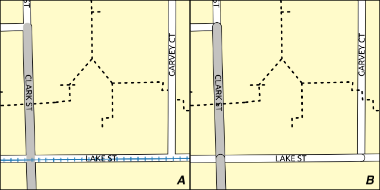
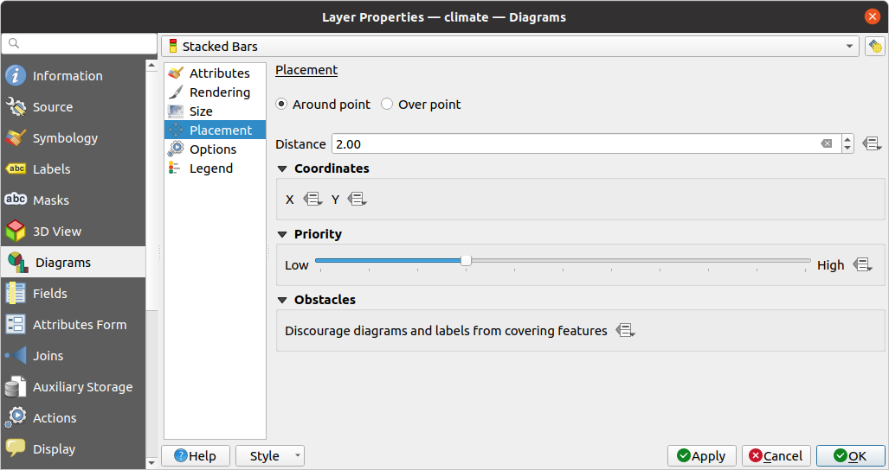
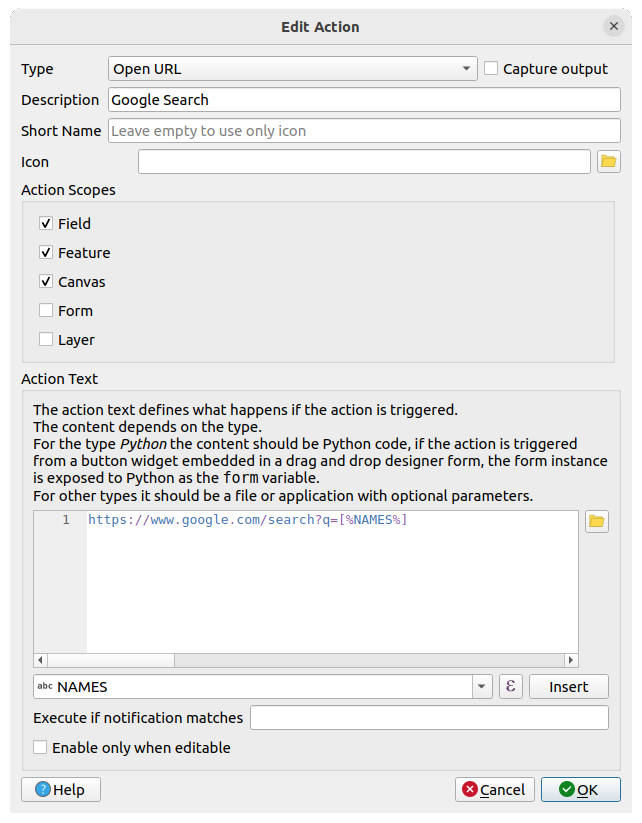
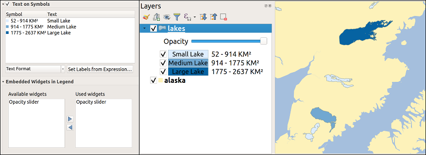

The Layer Properties dialog for a vector layer provides general
settings to manage appearance of layer features in the map (symbology,
labeling, diagrams), interaction with the mouse (actions, map tips, form
design). It also provides information about the layer.
To access the Layer Properties dialog:
In the Layers panel, double-click the layer or right-click
and select Properties… from the pop-up menu;
Go to Layer ► Layer Properties… menu when the layer
is selected.
The vector Layer Properties dialog provides the following sections:
[2]External plugins you install can optionally add tabs to this
dialog. Those are not presented in this document. Refer to their documentation.
Tip
Share full or partial properties of the layer styles
The Style menu at the bottom of the dialog allows you to import or export
these or part of these properties from/to several destination (file, clipboard, database).
See Managing Custom Styles.
Note
Because properties (symbology, label, actions, default values, forms…) of
embedded layers (see Embedding layers from external projects) are pulled from the original
project file and to avoid changes that may break this behavior, the layer
properties dialog is made unavailable for these layers.
The Information tab is read-only and represents an interesting
place to quickly grab summarized information and metadata on the current layer.
Provided information are:
general such as name in the project, source path, list of auxiliary files,
last save time and size, the used provider
based on the provider of the layer: format of storage, geometry type,
data source encoding, extent, feature count…
the Coordinate Reference System: name, units, method, accuracy, reference
(i.e. whether it’s static or dynamic)
picked from the filled metadata: access, extents,
links, contacts, history…
and related to its geometry (spatial extent, CRS…) or its attributes (number
of fields, characteristics of each…).
Set a Layer name different from the layer filename that will be
used to identify the layer in the project (in the Layers Panel, with
expressions, in print layout legend, …)
Depending on the data format, select the Data source encoding if not
correctly detected by QGIS.
Displays the layer’s Assigned Coordinate Reference System (CRS).
You can change the layer’s CRS, selecting a recently used one
in the drop-down list or clicking on Select CRS button
(see Coordinate Reference System Selector). Use this process only if the CRS applied to the
layer is a wrong one or if none was applied.
If you wish to reproject your data into another CRS, rather use layer reprojection
algorithms from Processing or Save it into another layer.
Create spatial index (only for OGR-supported formats).
The Query Builder dialog is accessible through the Query Builder button
at the bottom of the Source tab in the Layer Properties dialog,
under the Provider feature filter group.
The Query Builder provides an interface that allows
you to define a subset of the features in the layer using a SQL-like WHERE
clause and to display the result in the main window. As long as the query is
active, only the features corresponding to its result are available in the
project.
You can use one or more layer attributes to define the filter in the QueryBuilder.
The use of more than one attribute is shown in Fig. 16.2.
In the example, the filter combines the attributes
toa (DateTime field: cast("toa"ascharacter)>'2017-05-17' and
cast("toa"ascharacter)<'2019-12-24T18:00:00'),
name (String field: "name">'S') and
FID (Integer field: FID>10)
using the AND, OR and NOT operators and parenthesis.
This syntax (including the DateTime format for the toa field) works for
GeoPackage datasets.
The filter is made at the data provider (OGR, PostgreSQL, MS SQL Server…) level.
So the syntax depends on the data provider (DateTime is for instance not
supported for the ESRI Shapefile format).
The complete expression:
You can also open the Query Builder dialog using the Filter…
option from the Layer menu or the layer contextual menu.
The Fields, Values and Operators sections in
the dialog help you to construct the SQL-like query exposed in the
Provider specific filter expression box.
The Fields list contains all the fields of the layer. To add an attribute
column to the SQL WHERE clause field, double-click its name or just type it into
the SQL box.
The Values frame lists the values of the currently selected field. To list all
unique values of a field, click the All button. To instead list the first
25 unique values of the column, click the Sample button. To add a value
to the SQL WHERE clause field, double click its name in the Values list.
You can use the search box at the top of the Values frame to easily browse and
find attribute values in the list.
The Operators section contains all usable operators. To add an operator to
the SQL WHERE clause field, click the appropriate button. Relational operators
( = , > , …), string comparison operator (LIKE), and logical
operators (AND, OR, …) are available.
The Test button helps you check your query and displays a message box with
the number of features satisfying the current query.
Use the Clear button to wipe the SQL query and revert the layer to its
original state (ie, fully load all the features).
It is possible to Save… the query as a .QQF file,
or Load… the query from a file into the dialog.
When a filter is applied,
QGIS treats the resulting subset acts as if it were the entire layer. For
example if you applied the filter above for ‘Borough’ ("TYPE_2"='Borough'),
you can not display, query, save or edit Anchorage, because that is a
‘Municipality’ and therefore not part of the subset.
Tip
Filtered layers are indicated in the Layers Panel
In the Layers panel, filtered layer is listed with a Filter icon next to it indicating the query used when the mouse hovers over the button.
Double-click the icon opens the Query Builder dialog for edit.
This can also be achieved through the Layer ► Filter… menu.
The Symbology tab provides you with a comprehensive tool for
rendering and symbolizing your vector data. You can use tools that are
common to all vector data, as well as special symbolizing tools that were
designed for the different kinds of vector data. However all types share the
following dialog structure: in the upper part, you have a widget that helps
you prepare the classification and the symbol to use for features and at
the bottom the Layer rendering widget.
Tip
Switch quickly between different layer representations
Using the Styles ► Add menu at the bottom of the
Layer Properties dialog, you can save as many styles as needed.
A style is the combination of all properties of a layer (such as symbology,
labeling, diagram, fields form, actions…) as you want. Then, simply
switch between styles from the context menu of the layer in Layers Panel
to automatically get different representations of your data.
Tip
Export vector symbology
You have the option to export vector symbology from QGIS into Google *.kml,
*.dxf and MapInfo *.tab files. Just open the right mouse menu of the layer
and click on Save As… to specify the name of the output file
and its format. In the dialog, use the Symbology export menu
to save the symbology either as Feature symbology ► or as
Symbol layer symbology ►. If you have used symbol layers,
it is recommended to use the second setting.
The renderer is responsible for drawing a feature together with the correct
symbol. Regardless layer geometry type, there are four common types of
renderers: single symbol, categorized, graduated and rule-based. For point
layers, there are point displacement, point cluster and heatmap renderers available while
polygon layers can also be rendered with the merged features, inverted polygons and 2.5 D renderers.
There is no continuous color renderer, because it is in fact only a special
case of the graduated renderer. The categorized and graduated renderers can be
created by specifying a symbol and a color ramp - they will set the colors for
symbols appropriately. For each data type (points, lines and polygons), vector
symbol layer types are available. Depending on the chosen renderer, the dialog
provides different additional sections.
Note
If you change the renderer type when setting the style of a vector layer the
settings you made for the symbol will be maintained. Be aware that this
procedure only works for one change. If you repeat changing the renderer
type the settings for the symbol will get lost.
The Single Symbol renderer is used to render
all features of the layer using a single user-defined symbol.
See The Symbol Selector for further information about symbol representation.
The No Symbols renderer is a special use case of the
Single Symbol renderer as it applies the same rendering to all features.
Using this renderer, no symbol will be drawn for features,
but labeling, diagrams and other non-symbol parts will still be shown.
Selections can still be made on the layer in the canvas and selected
features will be rendered with a default symbol. Features being edited
will also be shown.
This is intended as a handy shortcut for layers which you only want
to show labels or diagrams for, and avoids the need to render
symbols with totally transparent fill/border to achieve this.
The Categorized renderer is used to render the
features of a layer, using a user-defined symbol whose aspect reflects the
discrete values of a field or an expression.
Select the Value of classification: it can be an existing field
or an expression you can type in the box
or build using the associated button.
Using expressions for categorizing avoids the need to create a field for symbology purposes only
(eg, if your classification criteria are derived from one or more attributes).
The expression used to classify features can be of any type; eg, it can:
be a comparison. In this case, QGIS returns values 1 (True) and
0 (False). Some examples:
be used to transform linear values to discrete classes, e.g.:
CASEWHENx>1000THEN'Big'ELSE'Small'END
combine several discrete values into a single category, e.g.:
CASEWHENbuildingIN('residence','mobile home')THEN'residential'WHENbuildingIN('commercial','industrial')THEN'Commercial and Industrial'END
Tip
While you can use any kind of expression to categorize features,
for some complex expressions it might be simpler to use rule-based
rendering.
Configure the Symbol, which will be used as
base symbol for all the classes;
Indicate the Color ramp, ie the range of colors from which
the color applied to each symbol is selected.
Besides the common options of the color ramp widget,
you can apply a Random Color Ramp to the categories.
You can click the Shuffle Random Colors entry to regenerate a new set
of random colors if you are not satisfied.
Then click on the Classify button to create classes from the
distinct values of the provided field or expression.
Apply the changes if the live update
is not in use and each feature on the map canvas will be rendered with the
symbol of its class.
By default, QGIS appends an all other values class to the list.
While empty at the beginning, this class is used as a default class for any
feature not falling into the other classes (eg, when you create features
with new values for the classification field / expression).
Further tweaks can be done to the default classification:
You can Add new categories, Remove
selected categories or Delete All of them.
A class can be disabled by unchecking the checkbox to the left of the
class name; the corresponding features are hidden on the map.
Drag-and-drop the rows to reorder the classes
To change the symbol, the value or the legend of a class, double click the item.
Right-clicking over selected item(s) shows a contextual menu to:
Copy Symbol and Paste Symbol, a convenient way
to apply the item’s representation to others
Change Color… of the selected symbol(s)
Change Opacity… of the selected symbol(s)
Change Output Unit… of the selected symbol(s)
Change Width… of the selected line symbol(s)
Change Size… of the selected point symbol(s)
Change Angle… of the selected point symbol(s)
Merge Categories: Groups multiple selected categories into a single
one. This allows simpler styling of layers with a large number of categories,
where it may be possible to group numerous distinct categories into a smaller
and more manageable set of categories which apply to multiple values.
Tip
Since the symbol kept for the merged categories is the one of the
topmost selected category in the list, you may want to move the category
whose symbol you wish to reuse to the top before merging.
Unmerge Categories that were previously merged
The created classes also appear in a tree hierarchy in the Layers panel.
Double-click an entry in the map legend to edit the assigned symbol.
Right-click and you will get some more options.
The Advanced menu gives access to options to speed classification
or fine-tune the symbols rendering:
Match to saved symbols: Using the symbols library, assigns to each category a symbol whose name
represents the classification value of the category
Match to symbols from file…: Provided a file with symbols,
assigns to each category a symbol whose name represents the classification
value of the category
Symbol levels… to define the order of symbols rendering.
The Graduated renderer is used to render
all the features from a layer, using an user-defined symbol whose color or size
reflects the assignment of a selected feature’s attribute to a class.
Like the Categorized Renderer, the Graduated Renderer allows you
to define rotation and size scale from specified columns.
Also, analogous to the Categorized Renderer, it allows you to select:
The Value of classification: it can be an existing field
or an expression you can type in the box
or build using the associated button.
Using expressions for graduating avoids the need to create a field for symbology purposes only
(eg, if your classification criteria are derived from one or more attributes).
The symbol (using the Symbol selector dialog)
The legend format and the precision
The method to use to change the symbol: color or size
The colors (using the color Ramp list) if the color method is selected
The size (using the size domain and its unit)
Then you can use the Histogram tab which shows an interactive histogram of the
values from the assigned field or expression. Class breaks can be moved or
added using the histogram widget.
Note
You can use Statistical Summary panel to get more information on your vector
layer. See Statistical Summary Panel.
Back to the Classes tab, you can specify the number of classes and also the
mode for classifying features within the classes (using the Mode list). The
available modes are:
Equal Count (Quantile): each class will have the same number of elements
(the idea of a boxplot).
Equal Interval: each class will have the same size (e.g. with the values
from 1 to 16 and four classes, each class will have a size of four).
Fixed Interval: each class will have a fixed range of values (e.g. with the
values from 1 to 16 and an interval size of 4, the classes will be 1-4,
5-8, 9-12 and 13-16).
Logarithmic scale: suitable for data with a wide range of values.
Narrow classes for low values and wide classes for large values (e.g. for
decimal numbers with range [0..100] and two classes, the first class will
be from 0 to 10 and the second class from 10 to 100).
Natural Breaks (Jenks): the variance within each class is minimized while
the variance between classes is maximized.
Pretty Breaks: computes a sequence of about n+1 equally spaced nice values
which cover the range of the values in x. The values are chosen so that they
are 1, 2 or 5 times a power of 10. (based on pretty from the R statistical
environment https://www.rdocumentation.org/packages/base/topics/pretty).
Standard Deviation: classes are built depending on the standard deviation of
the values.
The listbox in the center part of the Symbology tab lists the classes
together with their ranges, labels and symbols that will be rendered.
Click on Classify button to create classes using the chosen mode. Each
classes can be disabled unchecking the checkbox at the left of the class name.
To change symbol, value and/or label of the class, just double click
on the item you want to change.
Right-clicking over selected item(s) shows a contextual menu to:
Copy Symbol and Paste Symbol, a convenient way
to apply the item’s representation to others
Change Color… of the selected symbol(s)
Change Opacity… of the selected symbol(s)
Change Output Unit… of the selected symbol(s)
Change Width… of the selected line symbol(s)
Change Size… of the selected point symbol(s)
Change Angle… of the selected point symbol(s)
The example in Fig. 16.5 shows the graduated rendering dialog for
the major_rivers layer of the QGIS sample dataset.
The created classes also appear in a tree hierarchy in the Layers panel.
Double-click an entry in the map legend to edit the assigned symbol.
Right-click and you will get some more options.
Proportional Symbol and Multivariate Analysis are not
rendering types available from the Symbology rendering drop-down list.
However with the data-defined override options applied
over any of the previous
rendering options, QGIS allows you to display your point and line data with
such representation.
Select the item at the upper level of the symbol tree, and use the
Data-defined overridebutton next
to the Size (for point layer) or Width (for line
layer) option.
Select a field or enter an expression, and for each feature, QGIS will apply
the output value to the property and proportionally resize the symbol in the
map canvas.
If need be, use the Size assistant… option of the
menu to apply some transformation (exponential, flannery…) to the symbol
size rescaling (see Using the data-defined assistant interface for more details).
You can choose to display the proportional symbols in the Layers panel and the print layout legend item:
unfold the Advanced drop-down list at the bottom of the main dialog of
the Symbology tab and select Data-defined size legend… to
configure the legend items (see Data-defined size legend for details).
Creating multivariate analysis
A multivariate analysis rendering helps you evaluate the relationship between
two or more variables e.g., one can be represented by a color ramp while the
other is represented by a size.
The simplest way to create multivariate analysis in QGIS is to:
First apply a categorized or graduated rendering on a layer, using the same
type of symbol for all the classes.
Then, apply a proportional symbology on the classes:
Click on the Change button above the classification frame:
you get the The Symbol Selector dialog.
Rescale the size or width of the symbol layer using the data defined override widget as seen above.
Like the proportional symbol, the scaled symbology can be added to the layer
tree, on top of the categorized or graduated classes symbols using the
data defined size legend feature. And
both representation are also available in the print layout legend item.
Fig. 16.6 Multivariate example with scaled size legend
Rules are QGIS expressions used to discriminate
features according to their attributes or properties in order to apply specific
rendering settings to them. Rules can be nested, and features belong to a class
if they belong to all the upper nesting level(s).
The Rule-based renderer is thus designed
to render all the features from a layer, using symbols whose aspect
reflects the assignment of a selected feature to a fine-grained class.
To create a rule:
Activate an existing row by double-clicking it (by default, QGIS adds a
symbol without a rule when the rendering mode is enabled) or click the
Edit rule or Add rule button.
In the Edit Rule dialog that opens, you can define a label
to help you identify each rule. This is the label that will be displayed
in the Layers Panel and also in the print composer legend.
Manually enter an expression in the text box next to the Filter option or press the button next to it to open
the expression string builder dialog.
Use the provided functions and the layer attributes to build an expression to filter the features you’d like to retrieve. Press
the Test button to check the result of the query.
You can enter a longer label to complete the rule description.
You can use the Scale Range option to set scales at which
the rule should be applied.
Finally, configure the symbol to use for these features.
And press OK.
A new row summarizing the rule is added to the Layer Properties dialog.
You can create as many rules as necessary following the steps above or copy
pasting an existing rule. Drag-and-drop the rules on top of each other to nest
them and refine the upper rule features in subclasses.
The rule-based renderer can be combined with categorized or graduated renderers.
Selecting a rule, you can organize its features in subclasses using the
Refine selected rules drop-down menu. Refined classes appear like
sub-items of the rule, in a tree hierarchy and like their parent, you can set
the symbology and the rule of each class.
Automated rule refinement can be based on:
scales: given a list of scales, this option creates a set of classes
to which the different user-defined scale ranges apply. Each new scale-based
class can have its own symbology and expression of definition.
This can e.g. be a convenient way to display the same features with various
symbols at different scales, or display only a set of features depending on
the scale (e.g. local airports at large scale vs international airports at
small scale).
categories: applies a categorized renderer
to the features falling in the selected rule.
or ranges: applies a graduated renderer
to the features falling in the selected rule.
Refined classes appear like sub-items of the rule, in a tree hierarchy and like
above, you can set symbology of each class.
Symbols of the nested rules are stacked on top of each other so be careful in
choosing them. It is also possible to uncheck Symbols
in the Edit rule dialog to avoid rendering a particular symbol
in the stack.
In the Edit rule dialog, you can avoid writing all the rules and
make use of the Else option to catch all the
features that do not match any of the other rules, at the same level. This
can also be achieved by writing Else in the Rule column of the
Layer Properties ► Symbology ► Rule-based dialog.
Right-clicking over selected item(s) shows a contextual menu to:
Copy and Paste, a convenient way to create new
item(s) based on existing item(s)
Copy Symbol and Paste Symbol, a convenient way
to apply the item’s representation to others
Change Color… of the selected symbol(s)
Change Opacity… of the selected symbol(s)
Change Output Unit… of the selected symbol(s)
Change Width… of the selected line symbol(s)
Change Size… of the selected point symbol(s)
Change Angle… of the selected point symbol(s)
Refine Current Rule: open a submenu that allows to
refine the current rule with scales, categories or Ranges.
Same as selecting the corresponding menu
at the bottom of the dialog.
Unchecking a row in the rule-based renderer dialog hides in the map canvas
the features of the specific rule and the nested ones.
The created rules also appear in a tree hierarchy in the map legend.
Double-click an entry in the map legend to edit the assigned symbol.
Right-click and you will get some more options.
The example in Fig. 16.7 shows the rule-based rendering
dialog for the rivers layer of the QGIS sample dataset.
The Point Displacement renderer takes
the point features falling in a given distance tolerance from each other and
places their symbols around their barycenter, following different placement
methods. This can be a convenient way to visualize all the features of a point
layer, even if they have the same location (e.g. amenities in a building).
To configure a point displacement renderer, you have to:
Set the Center symbol: how the virtual point at the center will
look like
Select the Renderer type: how you want to classify features
in the layer (single, categorized, rule-based…)
Press the Renderer Settings… button to configure features’
symbology according to the selected renderer
Indicate the Distance tolerance in which close features are
considered overlapping and then displaced over the same virtual point.
Supports common symbol units.
Configure the Placement methods:
Ring: places all the features on a circle whose radius depends on the
number of features to display.
Concentric rings: uses a set of concentric circles to show the features.
Grid: generates a regular grid with a point symbol at each intersection.
Displaced symbols are placed on the Displacement lines.
While the minimal spacing of the displacement lines depends on the
point symbols renderer, you can still customize some of their settings such as
the Stroke width, Stroke color and Size
adjustment (e.g., to add more spacing between the rendered points).
Use the Labels group options to perform points labeling: the labels
are placed near the displaced symbol, and not at the feature real position.
Select the Label attribute: a field of the layer to use for labeling
Indicate the Label font properties and size
Pick a Label color
Set a Label distance factor: for each point feature, offsets
the label from the symbol center proportionally to the symbol’s diagonal size.
Turn on Use scale dependent labeling
if you want to display labels only on scales larger than a given
Minimum map scale.
Point Displacement renderer does not alter feature geometry, meaning that
points are not moved from their position. They are still located
at their initial place. Changes are only visual, for rendering purpose.
Use instead the Processing Points displacement algorithm
if you want to create displaced features.
Unlike the Point Displacement renderer
which blows up nearest or overlaid point features placement, the Point Cluster renderer groups nearby points into a single
rendered marker symbol. Points that fall within a specified distance
from each others are merged into a single symbol.
Points aggregation is made based on the closest group being formed, rather
than just assigning them the first group within the search distance.
From the main dialog, you can:
Set the symbol to represent the point cluster in the Cluster symbol;
the default rendering displays the number of aggregated features thanks to the
@cluster_sizevariable on Font marker
symbol layer.
Select the Renderer type, i.e. how you want to classify features
in the layer (single, categorized, rule-based…)
Press the Renderer Settings… button to configure features’ symbology
as usual. Note that this symbology is only visible on features that are not clustered,
the Cluster symbol being applied otherwise.
Also, when all the point features in a cluster belong to the same rendering class,
and thus would be applied the same color, that color represents the @cluster_color
variable of the cluster.
Indicate the maximal Distance to consider for clustering features.
Supports common symbol units.
Point Cluster renderer does not alter feature geometry,
meaning that points are not moved from their position. They are still located
at their initial place. Changes are only visual, for rendering purpose.
Use instead the Processing K-means clustering or
DBSCAN clustering algorithm if you want to create cluster-based
features.
The Merged Features renderer allows area and line
features to be “dissolved” into a single object prior to rendering to ensure that
complex symbols or overlapping features are represented by a uniform and
contiguous cartographic symbol.
The Inverted Polygon renderer allows user
to define a symbol to fill in
outside of the layer’s polygons. As above you can select subrenderers, namely
Single symbol, Graduated, Categorized, Rule-Based or 2.5D renderer.
With the Heatmap renderer you can create live
dynamic heatmaps for (multi)point layers.
You can specify the heatmap radius in millimeters, points, pixels, map units or
inches, choose and edit a color ramp for the heatmap style and use a slider for
selecting a trade-off between render speed and quality. You can also define a
maximum value limit and give a weight to points using a field or an expression.
When adding or removing a feature the heatmap renderer updates the heatmap style
automatically.
Using the 2.5D renderer it’s possible to create
a 2.5D effect on your layer’s features.
You start by choosing a Height value (in map units). For that
you can use a fixed value, one of your layer’s fields, or an expression. You also
need to choose an Angle (in degrees) to recreate the viewer position
(0° means west, growing in counter clock wise). Use advanced configuration options
to set the Roof Color and Wall Color. If you would like
to simulate solar radiation on the features walls, make sure to check the
Shade walls based on aspect option. You can also
simulate a shadow by setting a Color and Size (in map
units).
Once you have finished setting the basic style on the 2.5D renderer, you can
convert this to another renderer (single, categorized, graduated). The 2.5D
effects will be kept and all other renderer specific options will be
available for you to fine tune them (this way you can have for example categorized
symbols with a nice 2.5D representation or add some extra styling to your 2.5D
symbols). To make sure that the shadow and the “building” itself do not interfere
with other nearby features, you may need to enable Symbols Levels (
Advanced ► Symbol levels…).
The 2.5D height and angle values are saved in the layer’s variables,
so you can edit it afterwards in the variables tab of the layer’s properties dialog.
The Embedded Symbols renderer allows to display the ‘native’
symbology of a provided datasource. This is mostly the case with KML
and TAB datasets that have predefined symbology.
From the Symbology tab, you can also set some options that invariably act on all
features of the layer:
Opacity: You can make the underlying layer in
the map canvas visible with this tool. Use the slider to adapt the visibility
of your vector layer to your needs. You can also make a precise definition of
the percentage of visibility in the menu beside the slider.
Blending mode at the Layer and Feature levels:
You can achieve special rendering effects with these tools that you may previously
only know from graphics programs. The pixels of your overlaying and
underlaying layers are mixed through the settings described in Blending Modes.
Apply paint effects on all the layer features with the
Draw Effects button.
Control feature rendering order allows you, using features
attributes, to define the z-order in which they shall be rendered.
Activate the checkbox and click on the button beside.
You then get the Define Order dialog in which you:
Choose a field or build an expression to apply to the layer features.
Set in which order the fetched features should be sorted, i.e. if you choose
Ascending order, the features with lower value are rendered under those
with higher value.
Define when features returning NULL value should be rendered: first
(bottom) or last (top).
Repeat the above steps as many times as rules you wish to use.
The first rule is applied
to all the features in the layer, z-ordering them according to their returned value.
Then, within each group of features with the same value (including those with
NULL value) and thus the same z-level, the next rule is applied to sort them.
And so on…
For renderers that allow stacked symbol layers (only heatmap doesn’t) there is
an option to control the rendering order of each symbol’s levels.
For most of the renderers, you can access the Symbols levels option by clicking
the Advanced button below the saved symbols list and choosing
Symbol levels. For the Rule-based Renderer the option is
directly available through Symbols Levels… button, while for
Point displacement Renderer renderer the same button is inside the
Rendering settings dialog.
To activate symbols levels, select the Enable symbol
levels. Each row will show up a small sample of the combined symbol, its label
and the individual symbols layer divided into columns with a number next to it.
The numbers represent the rendering order level in which the symbol layer
will be drawn. Lower values levels are drawn first, staying at the bottom, while
higher values are drawn last, on top of the others.
If symbols levels are deactivated, the complete symbols will be drawn
according to their respective features order. Overlapping symbols will
simply obfuscate to other below. Besides, similar symbols won’t “merge” with
each other.

Fig. 16.15 Symbol levels activated (A) and deactivated (B) difference
To enable the Data-defined Size Legend dialog to render symbology,
select the eponym option in the Advanced button below the saved symbols
list. For diagrams, the option is available under the Legend tab.
The dialog provides the following options to:
select the type of legend: Legend not enabled,
Separated legend items and Collapsed legend. For the latter option, you can select whether
the legend items are aligned at the Bottom or at the Center;
preview the symbol to use for legend representation;
insert the title in the legend;
resize the classes to use: by default, QGIS provides you with a legend of
five classes (based on natural pretty breaks) but you can apply your own
classification using the Manual size classes option.
Use the and buttons to set your custom classes
values and labels.
For collapsed legend, it’s possible to:
Align symbols in the center or the bottom
configure the horizontal leader Line symbol from the symbol
to the corresponding legend text.
A preview of the legend is displayed in the right panel of the dialog and
updated as you set the parameters.
To allow any symbol to become an animated symbol,
you can utilize Animation settings panel. In this panel,
you can enable animation for the symbol and set a specific frame rate for
the symbol’s redrawing.
Start by going to the top symbol level and select Advanced
menu in the bottom right of the dialog
Find Animation settings option
Check Is Animated to enable animation for the symbol
Configure the Frame rate, i.e. how fast the animation would
be played
You can now use @symbol_frame variable in any sub-symbol data defined
property in order to animate that property.
For example, setting the symbol’s rotation to data
defined expression @symbol_frame%360
will cause the symbol to rotate over time, with rotation speed dictated by
the symbol’s frame rate:
Fig. 16.17 Setting the symbol’s rotation to data defined expression
In order to improve layer rendering and avoid (or at least reduce)
the resort to other software for final rendering of maps, QGIS provides another
powerful functionality: the Draw Effects options,
which adds paint effects for customizing the visualization of vector layers.
The option is available in the Layer Properties ► Symbology dialog,
under the Layer rendering group (applying to the whole
layer) or in symbol layer properties (applying
to corresponding features). You can combine both usage.
Paint effects can be activated by checking the Draw effects option
and clicking the Customize effects button. That will open
the Effect Properties Dialog (see Fig. 16.18). The following
effect types, with custom options are available:
Source: Draws the feature’s original style according to the configuration
of the layer’s properties. The Opacity of its style can be adjusted
as well as the Blend mode and Draw mode.
These are common properties for all types of effects.
Blur: Adds a blur effect on the vector layer. The custom options that you
can change are the Blur type (Stack blur (fast) or
Gaussian blur (quality)) and the Blur strength.
Colorise: This effect can be used to make a version of the style using one
single hue. The base will always be a grayscale version of the symbol and you
can:
Use the Grayscale to select how to create it:
options are ‘By lightness’, ‘By luminosity’, ‘By average’ and ‘Off’.
If Colorise is selected, it will be possible to mix
another color and choose how strong it should be.
Control the Brightness, Contrast and
Saturation levels of the resulting symbol.
Drop Shadow: Using this effect adds a shadow on the feature, which looks
like adding an extra dimension. This effect can be customized by changing the
Offset angle and distance, determining where the shadow shifts
towards to and the proximity to the source object. Drop Shadow
also has the option to change the Blur radius and the
Color of the effect.
Inner Shadow: This effect is similar to the Drop Shadow
effect, but it adds the shadow effect on the inside of the edges of the feature.
The available options for customization are the same as the Drop
Shadow effect.
Inner Glow: Adds a glow effect inside the feature. This effect can be
customized by adjusting the Spread (width) of the glow, or
the Blur radius. The latter specifies the proximity from
the edge of the feature where you want any blurring to happen. Additionally,
there are options to customize the color of the glow using a Single
color or a Color ramp.
Outer Glow: This effect is similar to the Inner Glow effect,
but it adds the glow effect on the outside of the edges of the feature.
The available options for customization are the same as the Inner
Glow effect.
Transform: Adds the possibility of transforming the shape of the symbol.
The first options available for customization are the Reflect
horizontal and Reflect vertical, which actually create a
reflection on the horizontal and/or vertical axes. The other options are:
Shear X,Y: Slants the feature along the X and/or Y axis.
Scale X,Y: Enlarges or minimizes the feature along the X
and/or Y axis by the given percentage.
Rotation: Turns the feature around its center point.
and Translate X,Y changes the position of the item based on
a distance given on the X and/or Y axis.
One or more effect types can be used at the same time. You (de)activate an effect
using its checkbox in the effects list. You can change the selected effect type by
using the Effect type option. You can reorder the effects
using Move up and Move down
buttons, and also add/remove effects using the Add new effect
and Remove effect buttons.
There are some common options available for all draw effect types.
Opacity and Blend mode options work similar
to the ones described in Layer rendering and can be used in all draw
effects except for the transform one.
There is also a Draw mode option available for
every effect, and you can choose whether to render and/or modify the
symbol, following some rules:
Effects render from top to bottom.
Render only mode means that the effect will be visible.
Modifier only mode means that the effect will not be visible
but the changes that it applies will be passed to the next effect
(the one immediately below).
The Render and Modify mode will make the effect visible and
pass any changes to the next effect. If the effect is at the top of the
effects list or if the immediately above effect is not in modify mode,
then it will use the original source symbol from the layers properties
(similar to source).
The Labels properties provides you with all the needed
and appropriate capabilities to configure smart labeling on vector layers. This
dialog can also be accessed from the Layer Styling panel, or using
the Layer Labeling Options button of the Labels toolbar.
The first step is to choose the labeling method from the drop-down list.
Available methods are:
No labels: the default value, showing no labels
from the layer
Single labels: Show labels on the map using a single
attribute or an expression
and Blocking: allows to set a layer as just an
obstacle for other layer’s labels without rendering any labels of its own.
The next steps assume you select the Single labels
option, opening the following dialog.
Fig. 16.26 Layer labeling settings - Single labels
At the top of the dialog, a Value drop-down list is enabled.
You can select an attribute column to use for labeling. By default, the
display field is used. Click if you want to define
labels based on expressions - See Define labels based on expressions.
Note
Labels with their formatting can be displayed as entries in the legends,
if enabled in the Legend tab.
Below are displayed options to customize the labels, under various tabs:
You can use the automated placement settings to configure a project-level
automated behavior of the labels. In the top right corner of the
Labels tab, click the Automated placement
settings (applies to all layers) button, opening a dialog with the following
options:
Number of candidates: calculates and assigns to line and
polygon features the number of possible labels placement based on their size.
The longer or wider a feature is, the more candidates it has, and its labels
can be better placed with less risk of collision.
Text rendering: sets the default value for label rendering
widgets when exporting a map canvas or
a layout to PDF or SVG.
If Always render labels as text is selected then labels can be
edited in external applications (e.g. Inkscape) as normal text. BUT the side
effect is that the rendering quality is decreased, and there are issues with
rendering when certain text settings like buffers are in place. That’s why
Always render labels as paths (recommended) which exports labels
as outlines, is recommended.
Allow truncated labels on edges of map: controls
whether labels which fall partially outside of the map extent should be
rendered. If checked, these labels will be shown (when there’s no way to
place them fully within the visible area). If unchecked then partially
visible labels will be skipped. Note that this setting has no effects on
labels’ display in the layout map item.
Show all labels for all layers (i.e. including
colliding objects). Note that this option can be also set per layer (see
Rendering tab)
Show unplaced labels: allows to determine whether any
important labels are missing from the maps (e.g. due to overlaps or other
constraints). They are displayed using a customizable color.
Show candidates (for debugging): controls whether boxes
should be drawn on the map showing all the candidates generated for label placement.
Like the label says, it’s useful only for debugging and testing the effect different
labeling settings have. This could be handy for a better manual placement with
tools from the label toolbar.
Project labeling version: QGIS supports two different versions of
label automatic placement:
Version 1: the old system (used by QGIS versions 3.10 and earlier,
and when opening projects created in these versions in QGIS 3.12 or later).
Version 1 treats label and obstacle priorities as “rough guides” only,
and it’s possible that a low-priority label will be placed over a high-priority
obstacle in this version. Accordingly, it can be difficult to obtain the
desired labeling results when using this version and it is thus
recommended only for compatibility with older projects.
Version 2 (recommended): this is the default system in new
projects created in QGIS 3.12 or later. In version 2, the logic dictating
when labels are allowed to overlap obstacles
has been reworked. The newer logic forbids any labels from overlapping
any obstacles with a greater obstacle weight compared to the label’s
priority. As a result, this version results in much more predictable
and easier to understand labeling results.
With rule-based labeling multiple label configurations can be defined
and applied selectively on the base of expression filters and scale range, as in
Rule-based rendering.
To create a rule:
Select the Rule-based labeling option in the main
drop-down list from the Labels tab
Click the Add rule button at the bottom of the dialog.
Fill the new dialog with:
Description: a text used to identify the rule in the
Labels tab and as a label legend entry
in the print layout legend
Filter: an expression to select the features to apply the label
settings to
If there are rules already set, the Else option can be
used to select all the features not matching any filter of the rules
in the same group.
You can set a scale range in which the label
rule should be applied.
The options available under the Labels group box are
the usual label settings. Configure them and press
OK.
A summary of existing rules is shown in the main dialog (see Fig. 16.29).
You can add multiple rules, reorder or imbricate them with a drag-and-drop.
You can as well remove them with the button or edit them with
button or a double-click.
Whether you choose single or rule-based labeling type, QGIS allows using
expressions to label features.
Assuming you are using the Single labels method, click the
button near the Value drop-down list in the
Labels tab of the properties dialog.
In Fig. 16.30, you see a sample expression to label the alaska
trees layer with tree type and area, based on the field ‘VEGDESC’, some
descriptive text, and the function $area in combination with
format_number() to make it look nicer.
Expression based labeling is easy to work with. All you have to take
care of is that:
You may need to combine all elements (strings, fields, and functions)
with a string concatenation function such as concat, + or ||. Be
aware that in some situations (when null or numeric value are involved) not
all of these tools will fit your need.
Strings are written in ‘single quotes’.
Fields are written in “double quotes” or without any quote.
Let’s have a look at some examples:
Label based on two fields ‘name’ and ‘place’ with a comma as separator:
"name"||', '||"place"
Returns:
JohnSmith,Paris
Label based on two fields ‘name’ and ‘place’ with other texts:
'My name is ' + "name" + 'and I live in ' + "place"
'My name is ' || "name" || 'and I live in ' || "place"
concat('My name is ', name, ' and I live in ', "place")
Returns:
MynameisJohnSmithandIliveinParis
Label based on two fields ‘name’ and ‘place’ with other texts combining
different concatenation functions:
concat('My name is ', name, ' and I live in ' || place)
Returns:
MynameisJohnSmithandIliveinParis
Or, if the field ‘place’ is NULL, returns:
MynameisJohnSmith
Multi-line label based on two fields ‘name’ and ‘place’ with a
descriptive text:
concat('My name is ', "name", '\n' , 'I live in ' , "place")
Returns:
MynameisJohnSmithIliveinParis
Label based on a field and the $area function to show the place’s name
and its rounded area size in a converted unit:
'The area of ' || "place" || ' has a size of '
|| round($area/10000) || ' ha'
Returns:
TheareaofParishasasizeof10500ha
Create a CASE ELSE condition. If the population value in field
population is <= 50000 it is a town, otherwise it is a city:
concat('This place is a ',
CASE WHEN "population" <= 50000 THEN 'town' ELSE 'city' END)
Returns:
Thisplaceisatown
Display name for the cities and no label for the other features
(for the “city” context, see example above):
CASE WHEN "population" > 50000 THEN "NAME" END
Returns:
Paris
As you can see in the expression builder, you have hundreds of functions available
to create simple and very complex expressions to label your data in QGIS. See
Expressions chapter for more information and examples on expressions.
With the Data defined override function, the settings for
the labeling are overridden by entries in the attribute table or expressions
based on them. This feature can be used to
set values for most of the labeling options described above.
For example, using the Alaska QGIS sample dataset, let’s label the airports
layer with their name, based on their militarian USE, i.e. whether the airport
is accessible to :
military people, then display it in gray color, size 8;
others, then show in blue color, size 10.
To do this, after you enabled the labeling on the NAME field of the layer
(see Setting a label):
Likewise, you can customize any other property of the label, the way you want.
See more details on the Data-define override widget’s
description and manipulation in Data defined override setup section.
Fig. 16.31 Airports labels are formatted based on their attributes
Tip
Use the data-defined override to label every part of multi-part features
There is an option to set the labeling for multi-part features independently from
your label properties. Choose the Rendering,
Featureoptions, go to the Data-define override button
next to the checkbox Label every part of multipart-features
and define the labels as described in Data defined override setup.
Highlight Pinned Labels, Diagrams and Callouts.
If the vector layer of the item is editable, then the highlighting is green,
otherwise it’s blue.
Toggle Display of Unplaced Labels: Allows to
determine whether any important labels are missing from the maps (e.g. due
to overlaps or other constraints). They are displayed with a customizable
color (see Setting the automated placement engine).
Pin/Unpin Labels and Diagrams. By clicking or draging an
area, you pin overlaid items. If you click or drag an area holding Shift,
the items are unpinned. Finally, you can also click or drag an area holding
Ctrl to toggle their pin status.
Show/Hide Labels and Diagrams. If you click on the items,
or click and drag an area holding Shift, they are hidden.
When an item is hidden, you just have to click on the feature to restore its
visibility. If you drag an area, all the items in the area will be restored.
Move a Label, Diagram or Callout: click to select
the item and click to move it to the desired place. The new coordinates are
stored in auxiliary fields.
Selecting the item with this tool and hitting the Delete key
will delete the stored position value.
Rotate a Label. Click to select the label and click again
to apply the desired rotation. Likewise, the new angle is stored in an auxiliary
field. Selecting a label with this tool and hitting the
Delete key will delete the rotation value of this label.
Change Label Properties. It opens a dialog to change the
clicked label properties; it can be the label itself, its coordinates, angle,
font, size, multiline alignment … as long as this property has been mapped
to a field. Here you can set the option to Label every
part of a feature.
Warning
Label tools overwrite current field values
Using the Label toolbar to customize the labeling actually writes
the new value of the property in the mapped field. Hence, be careful to not
inadvertently replace data you may need later!
Note
The Auxiliary Storage Properties mechanism may be used to customize
labeling (position, and so on) without modifying the underlying data source.
Combined with the Label Toolbar, the data defined override setting
helps you manipulate labels in the map canvas (move, edit, rotate).
We now describe an example using the data-defined override function for the
Move Label, Diagram or Callout function
(see Fig. 16.33).
Import lakes.shp from the QGIS sample dataset.
Double-click the layer to open the Layer Properties. Click on Labels
and Placement. Select Offset from centroid.
Look for the Data defined entries. Click the icon
to define the field type for the Coordinate. Choose xlabel
for X and ylabel for Y. The icons are now highlighted in yellow.
Fig. 16.33 Labeling of vector polygon layers with data-defined override
Zoom into a lake.
Set editable the layer using the Toggle Editing button.
Go to the Label toolbar and click the icon.
Now you can shift the label manually to another position (see Fig. 16.34).
The new position of the label is saved in the xlabel and ylabel columns
of the attribute table.
It’s also possible to add a line connecting each lake to its moved label using:
The Diagrams tab allows you to add a graphic overlay to
a vector layer (see Fig. 16.35).
The current core implementation of diagrams provides support for:
No diagrams: the default value with no diagram
displayed over the features;
Pie chart, a circular statistical graphic divided into
slices to illustrate numerical proportion. The arc length of each slice is
proportional to the quantity it represents;
Text diagram, a horizontaly divided circle showing statistics
values inside;
Histogram, bars of varying colors for each attribute
aligned next to each other
Stacked bars, Stacks bars of varying colors for each
attribute on top of each other vertically or horizontally
In the top right corner of the Diagrams tab, the Automated placement settings (applies to all layers) button provides
means to control diagram labels placement on the
map canvas.
Tip
Switch quickly between types of diagrams
Given that the settings are almost common to the different types of
diagram, when designing your diagram, you can easily change the diagram type
and check which one is more appropriate to your data without any loss.
For each type of diagram, the properties are divided into several tabs:
Attributes defines which variables to display in the diagram.
Use add item button to select the desired fields into
the ‘Assigned Attributes’ panel. Generated attributes with Expressions
can also be used.
You can move up and down any row with click and drag, sorting how attributes
are displayed. You can also change the label in the ‘Legend’ column
or the attribute color by double-clicking the item.
This label is the default text displayed in the legend of the print layout
or of the layer tree.
Rendering defines how the diagram looks like. It provides
general settings that do not interfere with the statistic values such as:
the graphic’s opacity, its outline width and color;
depending on the type of diagram:
for histogram and stacked bars, the width of the bar and the spacing
between the bars. You may want to set the spacing to 0 for stacked bars.
Moreover, the Axis line symbol can be made visible on the
map canvas and customized using line symbol properties.
for text diagram, the circle background color and
the font used for texts;
for pie charts, the Start angle of the first
slice and their Direction (clockwise or not).
In this tab, you can also manage and fine tune the diagram visibility with
different options:
Diagram z-index: controls how diagrams are drawn on top of each
other and on top of labels. A diagram with a high index is drawn over diagrams
and labels;
Show all diagrams: shows all the diagrams even if they
overlap each other;
Show diagram: allows only specific diagrams to be rendered;
Always Show: selects specific diagrams to always render, even when
they overlap other diagrams or map labels;
Size is the main tab to set how the selected statistics are
represented. The diagram size units can be ‘Millimeters’,
‘Points’, ‘Pixels’, ‘Map Units’ or ‘Inches’.
You can use:
Fixed size, a unique size to represent the graphic of all the
features (not available for histograms)
or Scaled size, based on an expression using layer attributes:
In Attribute, select a field or build an expression
Press Find to return the Maximum value of the
attribute or enter a custom value in the widget.
For histogram and stacked bars, enter a Bar length value,
used to represent the Maximum value of the attributes.
For each feature, the bar length will then be scaled linearly to keep
this matching.
For pie chart and text diagram, enter a Size value,
used to represent the Maximum value of the attributes.
For each feature, the circle area or diameter will then be scaled
linearly to keep this matching (from 0).
A Minimum size can however be set for small diagrams.
Placement defines the diagram position.
Depending on the layer geometry type, it offers different options for the
placement (more details at Placement):
Around point or Over point for point geometry.
The former variable requires a radius to follow.
Around line or Over line for line geometry.
Like point feature, the first variable requires a distance to respect
and you can specify the diagram placement relative to the feature
(‘above’, ‘on’ and/or ‘below’ the line)
It’s possible to select several options at once.
In that case, QGIS will look for the optimal position of the diagram.
Remember that you can also use the line orientation for the position
of the diagram.
Around centroid (at a set Distance),
Over centroid, Using perimeter and
Inside polygon are the options for polygon features.
The Coordinate group provides direct control on diagram
placement, on a feature-by-feature basis, using their attributes
or an expression to set the X and Y coordinate.
The information can also be filled using the Move labels and diagrams tool.
In the Priority section, you can define the placement priority rank
of each diagram, ie if there are different diagrams or labels candidates for the
same location, the item with the higher priority will be displayed and the
others could be left out.
Discourage diagrams and labels from covering features defines
features to use as obstacles, ie QGIS will try to not
place diagrams nor labels over these features.
The priority rank is then used to evaluate whether a diagram could be omitted
due to a greater weighted obstacle feature.

Fig. 16.38 Vector properties dialog with diagram properties, Placement tab
The Options tab has settings for histograms and stacked bars.
You can choose whether the Bar orientation should be
Up, Down, Right or Left,
for horizontal and vertical diagrams.
From the Legend tab, you can choose to display items of the diagram
in the Layers panel, and in the print layout legend, next to the layer symbology:
check Show legend entries for diagram attributes to display in the
legends the Color and Legend properties, as previously assigned in the
Attributes tab;
and, when a scaled size is being used for the diagrams,
push the Legend Entries for Diagram Size… button to configure the
diagram symbol aspect in the legends. This opens the Data-defined
Size Legend dialog whose options are described in Data-defined size legend.
When set, the diagram legend items (attributes with color and diagram size)
are also displayed in the print layout legend, next to the layer symbology.
The Masks tab helps you configure the current layer
symbols overlay with other symbol layers or labels, from any layer.
This is meant to improve the readability of symbols and labels whose colors
are close and can be hard to decipher when overlapping; it adds a custom and
transparent mask around the items to “hide” parts of the symbol layers of
the current layer.
To apply masks on the active layer, you first need to enable in the project
either mask symbol layers or mask labels. Then, from the Masks tab, check:
the Masked symbol layers: lists in a tree structure all the symbol
layers of the current layer. There you can select the symbol layer item you
would like to transparently “cut out” when they overlap the selected mask sources
the Mask sources tab: list all the mask labels and mask symbol
layers defined in the project.
Select the items that would generate the mask over the selected masked symbol
layers
The 3D View tab provides settings for vector layers that should
be depicted in the 3D Map view tool.
To display a layer in 3D, select from the combobox at the top of the tab, either:
Single symbol: features are rendered using a common 3D symbol
whose properties can be data-defined or not.
Read details on setting a 3D symbol for each layer geometry type.
Rule-based: multiple symbol configurations can be defined and applied
selectively based on expression filters and scale range.
More details on how-to at Rule-based rendering.
Prefer theElevationtab for symbol elevation and terrain settings
Features’ elevation and altitude related properties (Altitude clamping,
Altitude binding, Extrusion or Height)
in the 3D View tab inherit their default values from the layer’s
Elevation properties and should preferably be set
from within the Elevation tab.
For better performance, data from vector layers are loaded in the background,
using multithreading, and rendered in tiles whose size can be controlled from
the Layer rendering section of the tab:
Zoom levels count: determines how deep the quadtree will be.
For example, one zoom level means there will be a single tile for the whole layer.
Three zoom levels means there will be 16 tiles at the leaf level (every extra
zoom level multiplies that by 4). The default is 3 and the maximum is 8.
Show bounding boxes of tiles: especially useful if
there are issues with tiles not showing up when they should.
The Fields tab provides information on
fields related to the layer and helps you organize them.
The layer can be made editable using the Toggle editing mode. At this moment, you can modify its structure using
the New field and Delete field
buttons.
When creating New field, the Comment option is
available only for data sources that allow editing comments
(See Database entries for more details).
You can also set aliases within Add Field dialog, for supported
OGR formats (GeoPackage and ESRI File Geodatabase).
You can also rename fields by double-clicking its name. This is only supported
for data providers like PostgreSQL, Oracle, Memory layer and some GDAL layers
depending on the GDAL version.
If set in the underlying data source or in the forms properties, the field’s alias is also displayed. An alias is a human
readable field name you can use in the feature form or the attribute table.
Aliases are saved in the project file.
Other than the fields contained in the dataset, virtual fields
and Auxiliary Storage included, the
Fields tab also lists fields from any joined layers.
Depending on the origin of the field, a different background color is applied to it.
For each listed field, the dialog also lists read-only characteristics such as
its Type, Type name, Length and
Precision`.
Depending on the data provider, you can associate a comment with a field, for
example at its creation. This information is retrieved and shown in the
Comment column and is later displayed when hovering over the
field label in a feature form.
Under the Configuration column, you can set how the field should
behave in certain circumstances:
Notsearchable: check this option if you do not want this field to be
queried by the search locator bar
DonotexposeviaWMS: check this option if you do not want to display
this field if the layer is served as WMS from QGIS server
DonotexposeviaWFS: check this option if you do not want to display
this field if the layer is served as WFS from QGIS server
The Attributes Form tab helps you set up the form to
display when creating new features or querying existing one. You can define:
the look and the behavior of each field in the feature form or the attribute
table (label, widget, constraints…);
the form’s structure (custom or autogenerated):
extra logic in Python to handle interaction with the form or field widgets.
At the top right of the dialog, you can set whether the form is opened by
default when creating new features. This can be configured per layer or globally
with the Suppress attribute form pop-up after feature creation
option in the Settings ► Options ► Digitizing menu.
By default, when you click on a feature with the Identify
Features tool or switch the attribute table to the form view mode, QGIS
displays a basic form with predefined widgets (generally spinboxes and
textboxes — each field is represented on a dedicated row by its label next
to the widget). If relations are set on the layer,
fields from the referencing layers are shown in an embedded frame
at the bottom of the form, following the same basic structure.
This rendering is the result of the default Autogenerate value of the
Attribute editor layout setting in the Layer
properties ► Attributes Form tab. This property holds three different
values:
Autogenerate: keeps the basic structure of “one row - one field” for the
form but allows to customize each corresponding widget.
Drag-and-dropdesigner: other than widget customization, the form
structure can be made more complex eg, with widgets embedded in groups and
tabs.
Provideuifile: allows to use a Qt designer file, hence a potentially
more complex and fully featured template, as feature form.
When the Autogenerate option is on, the Available widgets panel
shows lists of fields (from the layer and its relations) that would be shown in
the form. Select a field and you can configure its appearance and behavior in
the right panel:
The drag and drop designer allows you to create a form with several containers
(tabs or groups) to present the attribute fields or other widgets that are not
directly linked to a particular field (like the HTML/QML widgets or the
actions defined for the layer), as shown for example in
Fig. 16.43.
Fig. 16.43 Resulting built-in form with tabs and named groups
Choose Draganddropdesigner from the Select attribute layout editor combobox.
This enables the Form Layout panel next to the Available widgets panel,
filled with existing fields.
The selected field displays its properties in a third panel.
Select fields you do not want to use in your Form Layout
panel and hit the button to remove them.
You can also toggle the selection with the Invert selection button.
Drag and drop fields from the first panel to the Form Layout one to re-add them.
The same field can be added multiple times.
Drag and drop fields within the Form Layout panel to reorder their position.
Add containers to associate fields that belong to the same category
and better structure the form.
The first step is to use the Add a new tab or group to the form layout icon.
Fields and other groups will be displayed in it.
Then set the properties of the container, ie:
the Label: the title that will be used for the container
the Container Type: it can be a Tab,
Group box in container (a collapsible group box inside a tab or another group)
or a Row (a container type that allows you to arrange your widgets in a horizontal row,
automatically determining the number of columns based on the number of widgets),
the Within: this optional feature allows you to select an existing container
in which the new container (Group box in container or Row) will be embedded.
and the Number of columns the embedded fields should be distributed over
Fig. 16.44 Dialog to create containers with the Attribute editor layout
These, and other properties can later be updated by selecting the item and,
from the third panel:
hide or show the container’s label
rename the container
set the number of columns
enter an expression to control the container’s visibility.
The expression will be re-evaluated every time values in the form change,
and the tab or group box shown/hidden accordingly
Show as Group Box: converts a tab into a top-level group box
and vice versa
in case of a group box, set whether at the form opening,
it should show as Collapsed for every features,
or only for those matching an expression (Control collapsed by expression).
configure the Style look of the container, with custom Background color,
label color and font properties
You can create and embed as many containers as you want by pressing again
the Add a new tab or group to the form layout icon.
The next step is to assign the relevant fields to each container,
by simple drag and drop. Group boxes and tabs can also be moved the same way.
In case the layer is involved in a one or many to many relation, drag-and-drop the relation name from the
Available Widgets panel to the Form Layout panel.
The associated layer attribute form will be embedded at the chosen place
in the current layer’s form. As for the other items, select the relation label
to configure some properties:
hide or show the relation label
show the link button
show the unlink button
In case the layer has one or more actions enabled for
Layer or Feature scope, the actions will be listed under Actions
and you can drag and drop them as with the other fields.
The associated action will be embedded at the chosen place
in the current layer’s form.
Further customize the form by adding one or more widgets from Other Widgets
(see Other Widgets)
Apply the layer’s properties dialog
Open a feature attribute form (eg, using the Identify features tool)
and it should display the new form.
The drag and drop designer offers a number of widgets that are not connected to a particular field.
They can be used to enhance the appearance of the form or to display dynamically calculated values.
HTML Widget: embeds an HTML page, the HTML source may contain the result of dynamically calculated expressions.
HTML widgets can be used for example to display images stored as BLOB in a field
(let’s call it photo):
In the Drag-and-dropdesigner mode, add a HTML Widget
to your Form Layout.
Double-click on the HTML Widget to configure it.
Change the default Title or hide it.
Press the button and enter the following QGIS expression:
Ensure that you replace photo with your own BLOB field name.
The above expression creates a string with HTML image tag in which the BLOB file is encoded.
Apply the dialog and then press the button.
QGIS automatically applies HTML formatting and functions to evaluate your expression,
resulting in following code:
A preview of your image is displayed on the right.
QML Widget: embeds a QML page, the QML source may contain the result of dynamically calculated expressions.
Text Widget: displays a text widget which supports basic HTML markup
and may contain the result of dynamically calculated expressions.
Spacer Widget: inserts an empty transparent rectangle, increasing the vertical distance between two widgets.
Tip
Display Dynamic Content
The widgets mentioned above (except the Spacer Widget) support expressions that can be used to display
content that dynamically changes whenever another field in the form changes.
This can be achieved using the current_value('field_name') function in the expression to examine
the value of another field.
The Provideui-file option allows you to use complex dialogs made with
Qt-Designer. Using a UI-file allows a great deal of freedom in creating a
dialog. Note that, in order to link the graphical objects (textbox,
combobox…) to the layer’s fields, you need to give them the same name.
Use the Edit UI to define the path to the file to use.
UI-files can also be hosted on a remote server.
In this case, you provide the URL of the form instead of the file path in Edit UI.
QGIS forms can have a Python function that is called when the dialog is opened.
Use this function to add extra logic to your dialogs. The form code can be
specified in three different ways:
loadfromtheenvironment: use a function, for example in
startup.py or from an installed plugin
loadfromanexternalfile: a file chooser will let you
select a Python file from your filesystem or enter a URL for a remote file.
providecodeinthisdialog: a Python editor will appear where you can
directly type the function to use.
In all cases you must enter the name of the function that will be called
(open in the example below).
An example is (in module MyForms.py):
defopen(dialog,layer,feature):geom=feature.geometry()control=dialog.findChild(QWidget,"My line edit")
The main part of the Attributes Form tab helps you set the
type of widget used to fill or display values of the field, in the attribute
table or the feature form: you can define how user interacts with each field
and the values or range of values that are allowed to be added to each.
Fig. 16.45 Dialog to select an edit widget for an attribute column
Alias: a human readable name to use for fields. The alias will be
displayed in the feature form, the attribute table, or in the Identify
results panel.
It can also be used as field name replacement in the expression builder, easing expressions understanding and reviews.
Aliases are saved in project file.
Comment: displays the field’s comment as shown in the
Fields tab, in a read-only state. This information is shown as
tooltip when hovering over the field label in a feature form.
Editable: uncheck this option to set the field read-only
(not manually modifiable) even when the layer is in edit mode. Note that
checking this setting doesn’t override any edit limitation from the provider.
This option can be controlled by a data-defined property thanks to the
Data-defined override button.
Reuse last entered value: remembers the last value
entered in this field and uses it as default for the next feature being edited
in the layer.
Label on top: places the field name above or beside
the widget in the feature form.
You can constrain the value to insert in the field. This constraint can be:
Not null: requires the user to provide a value;
Unique: guarantee the inserted value to be unique
throughout the field;
based on a custom expression: e.g. notregexp_match(col0,'[^A-Za-z]')
will ensure that the value of the field col0 has only alphabet letters.
A short description can be added to help you remember the constraint.
Whenever a value is added or edited in a field, it’s submitted to the existing
constraints and:
if it meets all the requirements, a green check is shown beside the field
in the form;
if it does not meet all the requirements, then the field is colored in yellow
or orange and a corresponding cross is displayed next to the widget.
You can hover over the cross to remind which
constraints are applied to the field and fix the value:
A yellow cross appears when the unmet constraint is an unenforced one (softconstraint)
and it does not prevent you to save the changes with the “wrong” values;
An orange cross can not be ignored and does not allow you to save your
modifications until they meet the constraints. It appears when the
Enforce constraint option is checked (hardconstraint).
Default value: for new features, automatically populates by default
the field with a predefined value or an expression-based one.
For example, you can:
use $x, $length, $area to automatically populate a field with the
feature’s X coordinate, length, area or any geometric information at its creation;
increment a field by 1 for each new feature using maximum("field")+1;
save the feature creation datetime using now();
use variables in expressions, making it
easier to e.g. insert the operator name (@user_full_name), the project
file path (@project_path), …
A preview of the resulting default value is displayed at the bottom of the widget.
Note
The Defaultvalue option is not aware of the values in any other
field of the feature being created so it won’t be possible to use an expression
combining any of those values i.e using an expression like concat(field1,field2)
may not work.
Apply default value on update: whenever the feature
attribute or geometry is changed, the default value is recalculated. This
could be handy to save values like last user that modifies data, last time it
was changed…
Policies allows you to determine how values are assigned to the field when Splitting features:
Duplicate Values: Keeps the existing value of the field for the resulting split features.
Use Default Value: Resets the field by recalculating its default value.
If no default value clause exists, the existing value is kept for the resulting split features.
Remove Value: Clears the field to an unset state.
Use Ratio Geometries: Recalculates the field value for all split portions
by multiplying the existing value by ratio of the split parts lengths or areas.
Based on the field type, QGIS automatically determines and assigns a default
widget type to it. You can then replace the widget with any other compatible
with the field type. The available widgets are:
Binary (BLOB): Available only for binary fields, it displays by default a label
with the size of the embedded data, if not empty.
A drop-down button next to the label allows to:
Embed file, replacing or filling the field
Clear contents, removing any data in the field
Save contents to file, exporting the data as a file on disk
It is also possible to preview the embedded binary file in the field,
if combined in a drag-and-drop form with e.g. a QML or HTML widget.
Checkbox: Displays a checkbox whose state defines the value to insert.
Classification: Only available when a categorized symbology is applied to the layer, displays a combo box with
the values of the classes.
Color: Displays a color widget allowing to select
a color; the color value is stored as a html notation in the attribute table.
Date/Time: Displays a line field which can open a calendar widget to enter
a date, a time or both. Column type must be text. You can select a custom
format, pop-up a calendar, etc.
Enumeration: Opens a combo box with predefined values fetched from the
database. This is currently only supported by the PostgreSQL provider, for
fields of enum type.
Attachment: Uses a “Open file” dialog to store file path in a
relative or absolute mode. It can be used to display a hyperlink (to
document path), a picture or a web page. User can also configure an
external storage system to fetch/store resources.
Tip
Relative Path in Attachment widget
If the path which is selected with the file browser is located in the same
directory as the .qgs project file or below, paths are converted to
relative paths. This increases portability of a .qgs project with
multimedia information attached.
Hidden: A hidden attribute column is invisible. The user is not able
to see its contents.
Key/Value: Displays a two-columns table to store sets of key/value
pairs within a single field. This is currently supported by the PostgreSQL
provider, for fields of hstore type.
JSON View: Displays JSON data in a syntax highlighted text edit or in
tree view. This widget is currently read only. Several options are available
to change how the data is displayed. ‘Default view’ specify if the widget should
appear in Text or Tree mode. ‘Format JSON’ has three options which are related
to the tree view only:
Indented: Display data in a human readable form with newlines and four space characters for indentation.
Compact: Display data in a one-line size optimized string without newlines or spaces.
Disabled: Display data as it comes from the provider.
List: Displays a single column table to add different values within a
single field. This is currently supported by the PostgreSQL provider,
for fields of array type.
Range: Allows you to set numeric values from a specific range. The edit
widget can be either a slider or a spin box.
Relation Reference: This is the default widget assigned to the referencing
field (i.e., the foreign key in the child layer) when a relation
is set. It provides direct access to the parent feature’s form which in turn
embeds the list and form of its children.
Text Edit (default): This opens a text edit field that allows simple
text or multiple lines to be used. If you choose multiple lines you
can also choose html content.
Unique Values: You can select one of the values already used in
the attribute table. If ‘Editable’ is activated, a line edit is shown with
autocompletion support, otherwise a combo box is used.
Uuid Generator: Generates a read-only UUID (Universally Unique Identifiers)
field, if empty.
Value Map: A combo box with predefined items. The value is stored in
the attribute, the description is shown in the combo box. You can define
values manually or load them from a layer or a CSV file.
Value Relation: Offers values from a related table in a combobox. You can
select layer, key column and value column. Several options are available to
change the standard behaviors: allow null value, order by value, allow
multiple selections and use of auto-completer. The forms will display either
a drop-down list or a line edit field when completer checkbox is enabled.
If a layer that is stored in PostgreSQL, GeoPackage or SpatiaLite is
configured to use a value relation widget, but the required layer is
not already loaded into the project, QGIS will automatically search for
the layer in the same database/connection.
The Joins tab allows you to associate features
of the current layer to features from another loaded vector layer (or table).
The join is based on an attribute that is shared by the layers,
in a one-to-one relationship.
For more details on joins, please read Joining features between two layers.
The regular way to customize styling and labeling is to use data-defined
properties as described in Data defined override setup. However, it may not be
possible if the underlying data is read only. Moreover, configuring these
data-defined properties may be very time consuming or not desirable! For
example, if you want to fully use map tools coming with The Label Toolbar,
then you need to add and configure more than 20 fields in your original data
source (X and Y positions, rotation angle, font style, color and so on).
The Auxiliary Storage mechanism provides the solution to these limitations
and awkward configurations. Auxiliary fields are a roundabout way to
automatically manage and store these data-defined properties (labels,
diagram, symbology…) in a SQLite database thanks to editable joins.
This allows you to store properties for layers that aren’t editable.
A tab is available in vector layer properties dialog to manage auxiliary
storage:
Considering that the data source may be customized thanks to data-defined
properties without being editable, labeling map tools described in
The Label Toolbar are always available as soon as labeling is activated.
Actually, the auxiliary storage system needs an auxiliary layer to store these
properties in a SQLite database (see Auxiliary storage database).
Its creation process is run the first time you click on the map while a
labeling map tool is currently activated. Then, a window is displayed, allowing
you to select the primary key to use for joining (to ensure that features are
uniquely identified):
The auxiliary layer now has these characteristics:
the primary key is ID,
there are 0 features using an auxiliary field,
there are 0 auxiliary fields.
Now that the auxiliary layer is created, you can edit the layer labels.
Click on a label while the Change Label
map tool is activated, then you can update styling properties like sizes,
colors, and so on. The corresponding data-defined properties are created
and can be retrieved:
As you can see in the figure above, 21 fields are automatically created and
configured for labeling. For example, the FontStyle auxiliary field type is
a String and is named labeling_fontstyle in the underlying SQLite
database. There is also 1 feature which is currently using these auxiliary
fields.
Notice that the icon is displayed in the Labels
properties tab indicating that the data-defined override options are set
correctly:
Otherwise, there’s another way to create an auxiliary field for a
specific property thanks to the
Data-defined override button.
By clicking on Store data in the project, an auxiliary
field is automatically created for the Opacity field.
If you click on this button and the auxiliary layer is not created
yet, a window (Fig. 16.47) is first
displayed to select the primary key to use for joining.
Like the method described above for customizing labels, auxiliary fields can
also be used to stylize symbols and diagrams. To do this, click on
Data-defined override and select Store data in
the project for a specific property. For example, the Fill
color field:
There are different attributes for each symbol (e.g. fill style, fill color,
stroke color, etc…), so each auxiliary field representing an attribute
requires a unique name to avoid conflicts. After selecting Store
data in the project, a window opens and displays the Type of the
field and prompts you to enter a unique name for the auxiliary field. For
example, when creating a Fill color auxiliary field the following
window opens:
Fig. 16.52 Name of the auxiliary field for a symbol
Once created, the auxiliary field can be retrieved in the auxiliary storage
tab:
Auxiliary fields can be edited using the
attribute table. However, not all auxiliary fields
are initially visible in the attribute table.
Auxiliary fields representing attributes of a layer’s symbology, labeling,
appearance, or diagrams will appear automatically in the attribute table. The
exception are attributes that can be modified using the Label Toolbar
which are hidden by default. Auxiliary fields representing a Color have a
widget Color set by default, otherwise auxiliary fields default to the
Text Edit widget.
Auxiliary fields that represent attributes that can be modified using
the Label toolbar are Hidden in the attribute table
by default. To make a field visible, open the Attribute Form properties
tab and change the value of an auxiliary field
Widget Type from Hidden to another relevant value. For example,
change the auxiliary_storage_labeling_size to Text Edit or change
auxiliary_storage_labeling_color to the Color widget. Those fields will
now be visible in the attribute table.
Auxiliary fields in the attribute table will appear like the following image:
The first item Create is disabled in this case because the auxiliary
layer is already created. But in case of a fresh work, you can use this action to
create an auxiliary layer. As explained in Labeling,
a primary key will be needed then.
The Clear action allows to keep all auxiliary fields, but remove
their contents. This way, the number of features using these fields will fall to
0.
The Delete action completely removes the auxiliary layer. In other
words, the corresponding table is deleted from the underlying SQLite database
and properties customization are lost.
Finally, the Export action allows to save the auxiliary layer as a
new vector layer. Note that geometries are not stored
in auxiliary storage. However, in this case, geometries are exported from the
original data source too.
When you save your project with the .qgs format, the SQLite database
used for auxiliary storage is saved at the same place but with the extension
.qgd.
For convenience, an archive may be used instead thanks to the .qgz format.
In this case, .qgd and .qgs files are both embedded in the archive.
The Actions tab provides the ability to perform an action
based on the attributes of a feature.
This can be used to perform any number of actions, for example,
running a program with arguments built from the attributes of a feature
or passing parameters to a web reporting tool.
Fig. 16.56 Overview action dialog with some sample actions
Actions are useful when you frequently want to run an external application
or view a web page based on one or more values in your vector layer.
They are of different types and can be used like this:
Generic, macOS, Windows
and Unix actions start an external process.
Python actions execute a Python expression.
Generic and Python actions are visible everywhere.
macOS, Windows and Unix
actions are visible only on the respective platform
(i.e., you can define three “Edit” actions to open an editor and the users can only
see and execute the one “Edit” action for their platform to run the editor).
Open URL: Uses a HTTP GET request to open a provided URL.
Submit URL (urlencoded or JSON):
Same as the Open URL action but using a HTTP POST request.
Data are posted to a URL, using “application/x-www-form-urlencoded”
or “application/json” if the body is a valid JSON.
Submit URL (multipart): Same as the Open URL action
but using a HTTP POST request.
Data are posted to a URL, using “multipart/form-data”.
There are several examples included in the dialog. You can load them by clicking
on Create Default Actions. To edit any of the examples, double-click
its row. One example is performing a search based on an attribute value. This
concept is used in the following discussion.
The Show in Attribute Table allows you to display in the
attribute table dialog the checked feature-scoped actions, either as Combo
Box or as Separate Buttons (see Configuring the columns).
To define an attribute action, open the vector Layer
Properties dialog and click on the Actions tab. In the
Actions tab, click the Add a new action
to open the Edit Action dialog.
Select the action Type and provide a descriptive name
for the action. The action itself must contain the name of the application
that will be executed when the action is invoked.
You can add one or more attribute field values as arguments to the application.
When the action is invoked, any set of characters that start with a %
followed by the name of a field will be replaced by the value of that field.
The special characters %% will be replaced by the value of the field
that was selected from the identify results or attribute table (see Using Actions).
Double quote marks can be used to group text into a single argument to the program, script or command.
Double quotes will be ignored if preceded by a backslash.
Actions can invoke a single process, with arguments, so Boolean operators (such as &, &&, ;, |) will not work.
In UNIX-like operating systems multiple commands can be executed via bash-c.
The Action Scopes allows you to define where the action should be available.
You have following choices:
Field: action is available when right click in the cell
within the attribute table, in the feature form and in the default action
button of the main toolbar.
Feature: action is available when right click in the cell
within the attribute table.
Canvas: action is available in the main action button in the toolbar.
Form: action is available only in a feature form designed
using the drag-and-drop mode.
Layer: action is available in the action button in the attribute table toolbar.
Be aware that this type of action involves the entire layer and not the single features.
If you have field names that are substrings of other field names (e.g.,
col1 and col10), you should indicate that by surrounding the field name
(and the % character) with square brackets (e.g., [%col10]). This will
prevent the %col10 field name from being mistaken for the %col1 field
name with a 0 on the end. The brackets will be removed by QGIS when it
substitutes in the value of the field. If you want the substituted field to be
surrounded by square brackets, use a second set like this: [[%col10]].
Using the Identify Features tool, you can open the
Identify Results dialog. It includes a (Derived) item that contains
information relevant to the layer type. The values in this item can be accessed
in a similar way to the other fields by proceeding the derived field name with
(Derived).. For example, a point layer has an X and Y field, and the
values of these fields can be used in the action with %(Derived).X and
%(Derived).Y. The derived attributes are only available from the
Identify Results dialog box, not the Attribute Table dialog box.
Two example actions are shown below:
konquerorhttps://www.google.com/search?q=%nam
konquerorhttps://www.google.com/search?q=%%
In the first example, the web browser konqueror is invoked and passed a URL
to open. The URL performs a Google search on the value of the nam field
from our vector layer. Note that the application or script called by the
action must be in the path, or you must provide the full path. To be certain, we
could rewrite the first example as:
/opt/kde3/bin/konquerorhttps://www.google.com/search?q=%nam. This will
ensure that the konqueror application will be executed when the action is
invoked.
The second example uses the %% notation, which does not rely on a particular
field for its value. When the action is invoked, the %% will be replaced by
the value of the selected field in the identify results or attribute table.
QGIS offers many ways to execute actions you enabled on a layer. Depending on
their settings, they can be available:
in the drop-down menu of Run Feature Action button from
the Attributes toolbar or Attribute table dialog;
when right-clicking a feature with the Identify Features tool
(see Identifying Features for more information);
from the Identify Results panel, under the Actions section;
as items of an Actions column in the Attribute Table dialog.
If you are invoking an action that uses the %% notation, right-click on the
field value in the Identify Results dialog or the
Attribute Table dialog that you wish to pass to the application
or script.
Here is another example that pulls data out of a vector layer and inserts
it into a file using bash and the echo command (so it will only work on
or perhaps ). The layer in question has fields for a species name
taxon_name, latitude lat and longitude long. We would like to be
able to make a spatial selection of localities and export these field values
to a text file for the selected record (shown in yellow in the QGIS map area).
Here is the action to achieve this:
As an exercise, we can create an action that does a Google search on the lakes
layer. First, we need to determine the URL required to perform a search on a
keyword. This is easily done by just going to Google and doing a simple
search, then grabbing the URL from the address bar in your browser. From this
little effort, we see that the format is https://www.google.com/search?q=QGIS,
where QGIS is the search term. Armed with this information, we can proceed:
Make sure the lakes layer is loaded.
Open the Layer Properties dialog by double-clicking on the
layer in the legend, or right-click and choose Properties
from the pop-up menu.
Click on the Actions tab.
Click Add a new action.
Choose the Open URL action type,
Enter a name for the action, for example GoogleSearch.
Additionally you can add a Short Name or even an Icon.
Choose the Action Scopes.
See Defining Actions for further information.
Leave the default settings for this example.
For the action, add the URL used for doing a Google search, up to but not including the search term:
https://www.google.com/search?q=
The text in the Action field should now look like this:
https://www.google.com/search?q=
Click on the drop-down box containing the field names for the lakes layer.
It’s located just to the left of the Insert button.
From the drop-down box, select NAMES and click Insert.
Your action text now looks like this:
https://www.google.com/search?q=[%NAMES%]
To finalize and add the action, click the OK button.

Fig. 16.57 Edit action dialog configured with the example
This completes the action, and it is ready to use.
Close the Layer Properties dialog and zoom in to an area of interest.
Make sure the lakes layer is active and identify a lake.
In the result box you’ll now see that our action is visible:
When we click on the action, it brings up our default browser and navigates to the URL
https://www.google.com/search?q=Tustumena. It is also possible to add further
attribute fields to the action. Therefore, you can add a + to the end of
the action text, select another field and click on Insert Field. In
this example, there is just no other field available that would make sense
to search for.
You can define multiple actions for a layer, and each will show up in the
Identify Results dialog.
You can also invoke actions from the attribute table
by selecting a row and right-clicking, then choosing the action from the
pop-up menu.
There are all kinds of uses for actions. For example, if you have
a point layer containing locations of images or photos along with a file name,
you could create an action to launch a viewer to display the image. You could
also use actions to launch web-based reports for an attribute field or
combination of fields, specifying them in the same way we did in our
Google search example.
We can also make more complex examples, for instance, using Python actions.
Usually, when we create an action to open a file with an external application,
we can use absolute paths, or eventually relative paths. In the second case,
the path is relative to the location of the external program executable file.
But what about if we need to use relative paths, relative to the selected layer
(a file-based one, like Shapefile or SpatiaLite)? The following code will
do the trick:
Another Python action example is the one that allows us to add new layers
to the project. For instance, the following examples will add to the project
respectively a vector and a raster. The names of the files to be added to the
project and the names to be given to the layers are data driven (filename and
layername are column names of the table of attributes of the vector where
the action was created):
The Display tab helps you configure fields to use for
feature identification:
The Display name: based on a field or an expression.
By default, this is set to the first field in the layer if no field with <name> component exists.
This is used as:
the label shown on top of the feature information in the Identify tool results
the field used in the locator bar when looking for
features in all layers
the feature identifier in the attribute table form view
the feature identifier when the map or layout is exported to a layered
output format such as GeoPDF
the map tip information, i.e. the message displayed in the map canvas
when hovering over a feature of the active layer with the Show Map Tips icon pressed.
Applicable when Enable Map Tips is active
and no HTML Map Tip is set.
Enable Map Tips controls whether to display map tips for the layer
The HTML Map Tip provides a complex and full HTML text editor for map tips,
mixing QGIS expressions and html styles and tags (multiline, fonts, images, hyperlink, tables, …).
You can check the result of your code sample in the Preview frame
(also convenient for previewing the Display name output).
Select the menu option View ► Show Map Tips
or click on the Show Map Tips icon of the Attributes Toolbar.
Make sure that the layer you target is active
and has the Enable Map Tips property checked.
Move over a feature, and the corresponding information will be displayed over.
Map tip is a cross-layer feature meaning that once activated,
it stays on and applies to any map tip enabled layer in the project until it’s toggled off.
Under Scale dependent visibility,
you can set the Maximum (inclusive)
and Minimum (exclusive) scales,
defining a range of scales in which features will be visible.
Out of this range, they are hidden.
The Set to current canvas scale button helps you
use the current map canvas scale as boundary of the range visibility.
See Visibility Scale Selector for more information.
Note
You can also activate scale dependent visibility on a layer from within
the Layers panel: right-click on the layer and in the contextual menu,
select Set Layer Scale Visibility.
QGIS offers support for on-the-fly feature generalisation.
This can improve rendering times when drawing many complex features at small scales.
This feature can be enabled or disabled in the layer settings
using the Simplify geometry option.
There is also a global setting that enables generalisation by default for newly added layers
(see global simplification for more information).
Note
Feature generalisation may introduce artefacts into your rendered output in some cases.
These may include slivers between polygons
and inaccurate rendering when using offset-based symbol layers.
The Fixed reference scale indicates the map scale
at which symbology and labeling sizes which uses paper-based units (such as millimeters or points) relate to.
The sizes will be scaled accordingly whenever the map is viewed at a different scale.
For instance, a line layer using a 2mm wide line with a 1:2000 Reference scale set
will be rendered using 4mm wide lines when the map is viewed at 1:1000.
The Selections group allows you to control whether a specific color or symbol should be used
in place of the defaults (Project properties ► General ► Selection color)
for a particular layer.
This is useful to improve the visibility of selected features with certain symbology:
Use default selection color
Override color for selected features: e.g. if the layer uses a yellow color by default
and the standard yellow selection is not visible.
Override symbol for selected features: e.g. if a line layer uses a thin symbol,
and coloring the lines might not make them visible enough, overriding the symbol with a thicker line can help.
Also, if the layer uses raster symbology or gradient fills/lines/shapeburst with color ramp symbology,
then the default selection color is not applied at all;
being able to set a specific simpler symbol to use for selected features in the layer can help.
Rendering extremely detailed layers (e.g. polygon layers with a huge number of nodes),
can cause layout exports in PDF/SVG format to be huge as all nodes are included in the exported file.
This can also make the resultant file very slow to work with/open in other programs.
Checking Force layer to render as raster forces these layers
to be rasterised so that the exported files won’t have to include all the nodes
contained in these layers and the rendering is therefore sped up.
You can also do this by forcing the layout to export as a raster,
but that is an all-or-nothing solution, given that the rasterisation is applied to all layers.
Alternatively, you can rely on geometry simplification in layout export settings.
Refresh layer at interval: controls whether and how regular a layer can be refreshed.
Available Configuration options are:
Reload data: the layer will be completely refreshed.
Any cached data will be discarded and refetched from the provider.
This mode may result in slower map refreshes.
Redraw layer only: this mode is useful for animation
or when the layer’s style will be updated at regular intervals.
Canvas updates are deferred in order to avoid refreshing multiple times
if more than one layer has an auto update interval set.
It is also possible to set the Interval (seconds) between consecutive refreshments.
Depending on the data provider (e.g. PostgreSQL), notifications can be sent to
QGIS when changes are applied to the data source, out of QGIS. Use the Refresh layer on notification option to trigger an update.
You can also limit the layer refresh to a specific message set in the Only if message is text box.
The Temporal tab provides options to control
the rendering of the layer over time. Such dynamic rendering requires the
temporal navigation to be enabled over the map canvas.
Check the Dynamic Temporal Control option to
configure the vector layer temporal rendering.
Depending on the structure of your dataset, you may want to use one of the
provided Configuration options:
Fixed time range: all the features are rendered if the
map canvas temporal frame overlaps the given Start date and
End date range.
Single field with date/time: features are rendered if their
Field’s value falls within the map canvas temporal frame.
An Event duration can be set.
With checking the Accumulate features over time option,
all features which occur before or within the map’s temporal range will
continue to be rendered. The event duration is thus ignored.
Separate fields for start and end date/time: features are rendered
if the range specified by their Start field and End field
values overlaps the map canvas temporal.
Separate fields for start and event duration: features are rendered
if the range defined by their Start field and Event duration field
values overlaps the map canvas temporal.
Start and end date/time from expressions: features are rendered
if the time range specified by the fields Start expression and
End expression overlaps the map canvas temporal.
Redraw layer only: the layer is redrawn at each new animation
frame but no time-based filtering is applied to the features.
It’s useful when the layer uses time-based expression values for renderer
settings (e.g. data-defined symbology).
It is also possible to set the Limits of the features time range as:
The Variables tab lists all the variables available at
the layer’s level (which includes all global and project’s variables).
It also allows the user to manage layer-level variables. Click the
button to add a new custom layer-level variable. Likewise, select a custom
layer-level variable from the list and click the button to remove
it.
The Elevation tab provides options to control
the layer elevation properties within a 3D map view
and its appearance in the profile tool charts.
Specifically, you can set:
Elevation Clamping: defines how and whether the features altitude
should be:
Clamped to terrain: takes elevation directly from the terrain
height and ignores any existing Z values in the features. A data-defined
Offset value from the terrain can also be filled.
Relative to terrain: any existing Z values in the features
are added to the terrain height. A Scale factor followed by
a data-defined Offset can be used to adjust the elevation.
This option is not available for 2D geometry layers.
Absolute: ignores the terrain height and directly takes Z values
from the features for the elevation. A Scale factor followed
by a data-defined Offset can be used to adjust the elevation.
For 2D geometry layers (with no Z values), a data-defined
Base height can instead be set.
Enable extrusion: you can set a Height
to control how high features vertically extend above their base.
This is convenient to indicate that a 2D geometry layers, e.g. a polygon
building footprints layer, actually represents 3D objects.
Elevation Binding: only relevant when combining an
Elevation clamping relying on the terrain with a line or
polygon layer, this option controls how feature elevation is set relative
to the terrain height. The terrain can be sampled:
at the feature’s Centroid, with the centroid height being
added to each vertex’s z value
at every individual Vertex before being added to the vertex’s
z value
Profile Chart Appearance: controls how features are rendered
when drawing a profile chart. Two main Interpretation modes
are available:
as Individual features: samples discrete positions where
the cross section profile line intersects the vector features.
That intersection can be represented as point, line or surface
depending on the layer type and whether an extrusion is applied.
With checking Respect layer symbology,
features will be rendered on the profile chart with their corresponding
layer styling (allowing e.g. categorized
classes to be visible on the profile chart).
If the profile symbol type does not match the layer’s renderer symbol types,
only the symbol color from the renderer is applied to the profile symbol.
Depending on the layer settings, profile symbols can be represented with
a custom style, using:
Marker style: for non-extruded point and line
features, and for non-extruded polygon features touched by the profile line
Line style: for extruded point and line features,
and for non-extruded polygon features intersected by the profile line
as Continuous Surface (e.g. contours): the elevation chart
will be rendered as a surface instead of separate features by joining
the sampled elevation results into a continuous line. This can enhance
visualisation and is designed for vector layers which represent a
continuous elevation surface, e.g. contour lines or surveyed elevation points.
The profile Style can be set as:
an elevation surface rendered using a fill symbol either above (Fill above)
or below (Fill below) the elevation curve line.
The surface symbology is represented using:
The Dependencies tab allows to declare data
dependencies between layers. A data dependency occurs when a data modification
in a layer, not by direct user manipulation, may modify data of other layers.
This is the case for instance when geometry of a layer is updated by a
database trigger or custom PyQGIS scripting after modification of another
layer’s geometry.
In the Dependencies tab, you can select any layers which may externally
alter the data in the current layer. Correctly specifying dependent layers
allows QGIS to invalidate caches for this layer when the dependent layers are
altered.
The Legend properties tab provides you with advanced
settings for the Layers panel and/or the print
layout legend. These options include:
Depending on the symbology applied to the layer, you may end up with several
entries in the legend, not necessarily readable/useful to display.
The Legend placeholder image helps you select an image for replacement, displayed both in the
Layers panel and the print layout legend.
Show label legend: Displays overviews of the different
label settings as entries in the legends.
The label style is previewed along with the description.
Text on symbols: In some cases it can be useful to add
extra information to the symbols in the legend. With this frame, you can
affect to any of the symbols used in the layer symbology a text that is
displayed over the symbol, in both Layers panel and print layout
legend. This mapping is done by typing each text next to the symbol in the
table widget or filling the table using the Set Labels from Expression
button. Text appearance is handled through the font and color selector
widgets of the Text Format button.

Fig. 16.64 Setting text on symbols (left) and its rendering in the Layers panel (right)
a list of widgets you can embed within the layer tree in the Layers panel.
The idea is to have a way to quickly access some actions that are often used
with the layer (setup transparency, filtering, selection, style or other
stuff…).
By default, QGIS provides transparency widget but this can be extended by
plugins registering their own widgets and assign custom actions to layers
they manage.
The QGIS Server tab consists of Description,
Attribution, Metadata URL, and Legend URL
sections.
From the Description section, you can change the Short name
used to reference the layer in requests (to learn more about short names, read
Short name). You can also add or edit a Title and
Abstract for the layer, or define a Keyword list here. These
keyword lists can be used in a metadata catalog. If you want to use a title from an
XML metadata file, you have to fill in a link in the Data URL field.
Use Attribution to get attribute data from an XML metadata catalog.
In Metadata URL, you can add the general paths to the XML metadata
catalog. This information will be saved in the QGIS project file for subsequent
sessions and will be used for QGIS Server.
In the Legend URL section, you can provide the url of a legend image
in the url field. You can use the Format drop-down option to apply the appropriate
format of the image. Currently png, jpg and jpeg image formats are supported.
Fig. 16.65 QGIS Server tab in vector layers properties dialog
Options in the Automatic Fixes section will directly affect the vertices
of any geometry which is added or modified.
If the Remove duplicate nodes option is checked, any two subsequent
vertices with exactly the same coordinates will be removed.
If the Geometry precision is set, all vertices will be rounded to
the closest multiple of the configured geometry precision. The rounding will
happen in the layer coordinate reference system. Z and M values are not
rounded. With many map tools, a grid is shown on the canvas while digitizing.
Fig. 16.67 Moving the top vertex snaps all the vertices to the grid
In the Geometry checks section, additional validations on a per
geometry basis can be activated. Immediately after any geometry modification,
failures in these checks are reported to the user in the Geometry validation panel.
As long as a check is failing, it is not possible to save the layer.
The Is valid check will run basic validity checks like self intersection on
geometries.
In the Topology checks section, additional topology validation
checks can be activated. Topology checks will be executed when the user
saves the layer. Check errors will be reported in the Geometry validation
panel. As long as validation errors are present, the layer can not be saved.
Topology checks are executed in the area of the bounding box of the modified
features. Since other features may be present in the same area, topological
errors concerning these features are reported as well as errors introduced
in the current edit session.
Topology check option
Illustration
The Gap check will check for
gaps between neighbouring polygons.
The Overlap check will check
for overlaps between neighbouring polygons.
The Missing vertex check will
check for shared boundaries of neighbouring polygons
where one border misses a vertex which is present on
the other one.
Sometimes it is desirable to keep gaps inside an area in a polygon
layer that otherwise is fully covered by polygons.
For example, a land use layer may have acceptable holes for lakes.
It is possible to define areas that are ignored in the gap check. Since gaps inside
these areas are allowed, we will refer to them as Allowed Gaps areas.
In the options for the gap checks under Allowed Gaps, an Allowed Gaps layer
can be configured.
Whenever the gap check is executed, gaps which are covered by one or more polygons
in the Allowed Gaps Layer are not reported as topology errors.
It is also possible to configure an additional Buffer.
This buffer is applied to each polygon on the Allowed Gaps Layer.
This makes it possible to make the tests less susceptible to small changes in the
outlines at the borders of gaps.
When Allowed Gaps are enabled, an additional button (Add Allowed Gap) for
detected gap errors is available in the geometry validation dock, where gaps are reported
during digitizing.
If the Add Allowed Gap button is pushed, a new polygon with the geometry
of the detected gap is inserted into the Allowed Gaps Layer.
This makes it possible to quickly flag gaps as allowed.
The Geometry Validation panel is triggered when any of the abovementioned
digitizing checks finds an error. The dialog provides you with the list of errors
and their description, and you can to browse the list using the keyboard arrows or
dedicated arrows.
You’ll need to address all the issues before you can save edits to the layer.
To do so:

 Information tab is read-only and represents an interesting
place to quickly grab summarized information and metadata on the current layer.
Provided information are:
Information tab is read-only and represents an interesting
place to quickly grab summarized information and metadata on the current layer.
Provided information are: Use this tab to define general settings for the vector layer.
Use this tab to define general settings for the vector layer.
 Select CRS button
(see Coordinate Reference System Selector). Use this process only if the CRS applied to the
layer is a wrong one or if none was applied.
If you wish to reproject your data into another CRS, rather use layer reprojection
algorithms from Processing or Save it into another layer.
Select CRS button
(see Coordinate Reference System Selector). Use this process only if the CRS applied to the
layer is a wrong one or if none was applied.
If you wish to reproject your data into another CRS, rather use layer reprojection
algorithms from Processing or Save it into another layer. Filter icon next to it indicating the query used when the mouse hovers over the button.
Double-click the icon opens the Query Builder dialog for edit.
This can also be achieved through the menu.
Filter icon next to it indicating the query used when the mouse hovers over the button.
Double-click the icon opens the Query Builder dialog for edit.
This can also be achieved through the menu. Symbology tab provides you with a comprehensive tool for
rendering and symbolizing your vector data. You can use tools that are
common to all vector data, as well as special symbolizing tools that were
designed for the different kinds of vector data. However all types share the
following dialog structure: in the upper part, you have a widget that helps
you prepare the classification and the symbol to use for features and at
the bottom the Layer rendering widget.
Symbology tab provides you with a comprehensive tool for
rendering and symbolizing your vector data. You can use tools that are
common to all vector data, as well as special symbolizing tools that were
designed for the different kinds of vector data. However all types share the
following dialog structure: in the upper part, you have a widget that helps
you prepare the classification and the symbol to use for features and at
the bottom the Layer rendering widget. Single Symbol renderer is used to render
all features of the layer using a single user-defined symbol.
See The Symbol Selector for further information about symbol representation.
Single Symbol renderer is used to render
all features of the layer using a single user-defined symbol.
See The Symbol Selector for further information about symbol representation.
 No Symbols renderer is a special use case of the
Single Symbol renderer as it applies the same rendering to all features.
Using this renderer, no symbol will be drawn for features,
but labeling, diagrams and other non-symbol parts will still be shown.
No Symbols renderer is a special use case of the
Single Symbol renderer as it applies the same rendering to all features.
Using this renderer, no symbol will be drawn for features,
but labeling, diagrams and other non-symbol parts will still be shown. Categorized renderer is used to render the
features of a layer, using a user-defined symbol whose aspect reflects the
discrete values of a field or an expression.
Categorized renderer is used to render the
features of a layer, using a user-defined symbol whose aspect reflects the
discrete values of a field or an expression.
 button.
Using expressions for categorizing avoids the need to create a field for symbology purposes only
(eg, if your classification criteria are derived from one or more attributes).
button.
Using expressions for categorizing avoids the need to create a field for symbology purposes only
(eg, if your classification criteria are derived from one or more attributes). Random Color Ramp to the categories.
You can click the Shuffle Random Colors entry to regenerate a new set
of random colors if you are not satisfied.
Random Color Ramp to the categories.
You can click the Shuffle Random Colors entry to regenerate a new set
of random colors if you are not satisfied. Add new categories,
Add new categories,  Remove
selected categories or Delete All of them.
Remove
selected categories or Delete All of them. Graduated renderer is used to render
all the features from a layer, using an user-defined symbol whose color or size
reflects the assignment of a selected feature’s attribute to a class.
Graduated renderer is used to render
all the features from a layer, using an user-defined symbol whose color or size
reflects the assignment of a selected feature’s attribute to a class. Data-defined override button next
to the Size (for point layer) or Width (for line
layer) option.
Data-defined override button next
to the Size (for point layer) or Width (for line
layer) option.
 Rule-based renderer is thus designed
to render all the features from a layer, using symbols whose aspect
reflects the assignment of a selected feature to a fine-grained class.
Rule-based renderer is thus designed
to render all the features from a layer, using symbols whose aspect
reflects the assignment of a selected feature to a fine-grained class. Edit rule or
Edit rule or  Filter option or press the
Filter option or press the  Scale Range option to set scales at which
the rule should be applied.
Scale Range option to set scales at which
the rule should be applied. Else option to catch all the
features that do not match any of the other rules, at the same level. This
can also be achieved by writing
Else option to catch all the
features that do not match any of the other rules, at the same level. This
can also be achieved by writing  Point Displacement renderer takes
the point features falling in a given distance tolerance from each other and
places their symbols around their barycenter, following different placement
methods. This can be a convenient way to visualize all the features of a point
layer, even if they have the same location (e.g. amenities in a building).
Point Displacement renderer takes
the point features falling in a given distance tolerance from each other and
places their symbols around their barycenter, following different placement
methods. This can be a convenient way to visualize all the features of a point
layer, even if they have the same location (e.g. amenities in a building).
 Point Cluster renderer groups nearby points into a single
rendered marker symbol. Points that fall within a specified distance
from each others are merged into a single symbol.
Points aggregation is made based on the closest group being formed, rather
than just assigning them the first group within the search distance.
Point Cluster renderer groups nearby points into a single
rendered marker symbol. Points that fall within a specified distance
from each others are merged into a single symbol.
Points aggregation is made based on the closest group being formed, rather
than just assigning them the first group within the search distance.
 Merged Features renderer allows area and line
features to be “dissolved” into a single object prior to rendering to ensure that
complex symbols or overlapping features are represented by a uniform and
contiguous cartographic symbol.
Merged Features renderer allows area and line
features to be “dissolved” into a single object prior to rendering to ensure that
complex symbols or overlapping features are represented by a uniform and
contiguous cartographic symbol. Inverted Polygon renderer allows user
to define a symbol to fill in
outside of the layer’s polygons. As above you can select subrenderers, namely
Single symbol, Graduated, Categorized, Rule-Based or 2.5D renderer.
Inverted Polygon renderer allows user
to define a symbol to fill in
outside of the layer’s polygons. As above you can select subrenderers, namely
Single symbol, Graduated, Categorized, Rule-Based or 2.5D renderer.
 Heatmap renderer you can create live
dynamic heatmaps for (multi)point layers.
You can specify the heatmap radius in millimeters, points, pixels, map units or
inches, choose and edit a color ramp for the heatmap style and use a slider for
selecting a trade-off between render speed and quality. You can also define a
maximum value limit and give a weight to points using a field or an expression.
When adding or removing a feature the heatmap renderer updates the heatmap style
automatically.
Heatmap renderer you can create live
dynamic heatmaps for (multi)point layers.
You can specify the heatmap radius in millimeters, points, pixels, map units or
inches, choose and edit a color ramp for the heatmap style and use a slider for
selecting a trade-off between render speed and quality. You can also define a
maximum value limit and give a weight to points using a field or an expression.
When adding or removing a feature the heatmap renderer updates the heatmap style
automatically.
 2.5D renderer it’s possible to create
a 2.5D effect on your layer’s features.
You start by choosing a Height value (in map units). For that
you can use a fixed value, one of your layer’s fields, or an expression. You also
need to choose an Angle (in degrees) to recreate the viewer position
(0° means west, growing in counter clock wise). Use advanced configuration options
to set the Roof Color and Wall Color. If you would like
to simulate solar radiation on the features walls, make sure to check the
2.5D renderer it’s possible to create
a 2.5D effect on your layer’s features.
You start by choosing a Height value (in map units). For that
you can use a fixed value, one of your layer’s fields, or an expression. You also
need to choose an Angle (in degrees) to recreate the viewer position
(0° means west, growing in counter clock wise). Use advanced configuration options
to set the Roof Color and Wall Color. If you would like
to simulate solar radiation on the features walls, make sure to check the
 : You can make the underlying layer in
the map canvas visible with this tool. Use the slider to adapt the visibility
of your vector layer to your needs. You can also make a precise definition of
the percentage of visibility in the menu beside the slider.
: You can make the underlying layer in
the map canvas visible with this tool. Use the slider to adapt the visibility
of your vector layer to your needs. You can also make a precise definition of
the percentage of visibility in the menu beside the slider. button beside.
You then get the Define Order dialog in which you:
button beside.
You then get the Define Order dialog in which you:

 Draw Effects options,
which adds paint effects for customizing the visualization of vector layers.
Draw Effects options,
which adds paint effects for customizing the visualization of vector layers.
 Grayscale to select how to create it:
options are ‘By lightness’, ‘By luminosity’, ‘By average’ and ‘Off’.
Grayscale to select how to create it:
options are ‘By lightness’, ‘By luminosity’, ‘By average’ and ‘Off’.


 Move up and
Move up and  Move down
buttons, and also add/remove effects using the
Move down
buttons, and also add/remove effects using the  Labels properties provides you with all the needed
and appropriate capabilities to configure smart labeling on vector layers. This
dialog can also be accessed from the Layer Styling panel, or using
the
Labels properties provides you with all the needed
and appropriate capabilities to configure smart labeling on vector layers. This
dialog can also be accessed from the Layer Styling panel, or using
the  No labels: the default value, showing no labels
from the layer
No labels: the default value, showing no labels
from the layer Blocking: allows to set a layer as just an
obstacle for other layer’s labels without rendering any labels of its own.
Blocking: allows to set a layer as just an
obstacle for other layer’s labels without rendering any labels of its own.


 Automated placement
settings (applies to all layers) button, opening a dialog with the following
options:
Automated placement
settings (applies to all layers) button, opening a dialog with the following
options:
 Rule-based labeling option in the main
drop-down list from the Labels tab
Rule-based labeling option in the main
drop-down list from the Labels tab
 meaning that an rule is being run.
meaning that an rule is being run.
 Rendering,
Rendering,
 diagram properties:
diagram properties: Highlight Pinned Labels, Diagrams and Callouts.
If the vector layer of the item is editable, then the highlighting is green,
otherwise it’s blue.
Highlight Pinned Labels, Diagrams and Callouts.
If the vector layer of the item is editable, then the highlighting is green,
otherwise it’s blue. Toggle Display of Unplaced Labels: Allows to
determine whether any important labels are missing from the maps (e.g. due
to overlaps or other constraints). They are displayed with a customizable
color (see Setting the automated placement engine).
Toggle Display of Unplaced Labels: Allows to
determine whether any important labels are missing from the maps (e.g. due
to overlaps or other constraints). They are displayed with a customizable
color (see Setting the automated placement engine). Pin/Unpin Labels and Diagrams. By clicking or draging an
area, you pin overlaid items. If you click or drag an area holding Shift,
the items are unpinned. Finally, you can also click or drag an area holding
Ctrl to toggle their pin status.
Pin/Unpin Labels and Diagrams. By clicking or draging an
area, you pin overlaid items. If you click or drag an area holding Shift,
the items are unpinned. Finally, you can also click or drag an area holding
Ctrl to toggle their pin status. Show/Hide Labels and Diagrams. If you click on the items,
or click and drag an area holding Shift, they are hidden.
When an item is hidden, you just have to click on the feature to restore its
visibility. If you drag an area, all the items in the area will be restored.
Show/Hide Labels and Diagrams. If you click on the items,
or click and drag an area holding Shift, they are hidden.
When an item is hidden, you just have to click on the feature to restore its
visibility. If you drag an area, all the items in the area will be restored. Move a Label, Diagram or Callout: click to select
the item and click to move it to the desired place. The new coordinates are
stored in auxiliary fields.
Selecting the item with this tool and hitting the Delete key
will delete the stored position value.
Move a Label, Diagram or Callout: click to select
the item and click to move it to the desired place. The new coordinates are
stored in auxiliary fields.
Selecting the item with this tool and hitting the Delete key
will delete the stored position value. Rotate a Label. Click to select the label and click again
to apply the desired rotation. Likewise, the new angle is stored in an auxiliary
field. Selecting a label with this tool and hitting the
Delete key will delete the rotation value of this label.
Rotate a Label. Click to select the label and click again
to apply the desired rotation. Likewise, the new angle is stored in an auxiliary
field. Selecting a label with this tool and hitting the
Delete key will delete the rotation value of this label. Change Label Properties. It opens a dialog to change the
clicked label properties; it can be the label itself, its coordinates, angle,
font, size, multiline alignment … as long as this property has been mapped
to a field. Here you can set the option to
Change Label Properties. It opens a dialog to change the
clicked label properties; it can be the label itself, its coordinates, angle,
font, size, multiline alignment … as long as this property has been mapped
to a field. Here you can set the option to 
 Toggle Editing button.
Toggle Editing button. No diagrams: the default value with no diagram
displayed over the features;
No diagrams: the default value with no diagram
displayed over the features; Pie chart, a circular statistical graphic divided into
slices to illustrate numerical proportion. The arc length of each slice is
proportional to the quantity it represents;
Pie chart, a circular statistical graphic divided into
slices to illustrate numerical proportion. The arc length of each slice is
proportional to the quantity it represents; Text diagram, a horizontaly divided circle showing statistics
values inside;
Text diagram, a horizontaly divided circle showing statistics
values inside; Histogram, bars of varying colors for each attribute
aligned next to each other
Histogram, bars of varying colors for each attribute
aligned next to each other Stacked bars, Stacks bars of varying colors for each
attribute on top of each other vertically or horizontally
Stacked bars, Stacks bars of varying colors for each
attribute on top of each other vertically or horizontally


 Masks tab helps you configure the current layer
symbols overlay with other symbol layers or labels, from any layer.
This is meant to improve the readability of symbols and labels whose colors
are close and can be hard to decipher when overlapping; it adds a custom and
transparent mask around the items to “hide” parts of the symbol layers of
the current layer.
Masks tab helps you configure the current layer
symbols overlay with other symbol layers or labels, from any layer.
This is meant to improve the readability of symbols and labels whose colors
are close and can be hard to decipher when overlapping; it adds a custom and
transparent mask around the items to “hide” parts of the symbol layers of
the current layer.
 3D View tab provides settings for vector layers that should
be depicted in the 3D Map view tool.
3D View tab provides settings for vector layers that should
be depicted in the 3D Map view tool.
 Fields tab provides information on
fields related to the layer and helps you organize them.
Fields tab provides information on
fields related to the layer and helps you organize them. New field and
New field and  Delete field
buttons.
Delete field
buttons.
 Attributes Form tab helps you set up the form to
display when creating new features or querying existing one. You can define:
Attributes Form tab helps you set up the form to
display when creating new features or querying existing one. You can define: Identify
Features tool or switch the attribute table to the form view mode, QGIS
displays a basic form with predefined widgets (generally spinboxes and
textboxes — each field is represented on a dedicated row by its label next
to the widget). If relations are set on the layer,
fields from the referencing layers are shown in an embedded frame
at the bottom of the form, following the same basic structure.
Identify
Features tool or switch the attribute table to the form view mode, QGIS
displays a basic form with predefined widgets (generally spinboxes and
textboxes — each field is represented on a dedicated row by its label next
to the widget). If relations are set on the layer,
fields from the referencing layers are shown in an embedded frame
at the bottom of the form, following the same basic structure.
 Invert selection button.
Invert selection button.

 Joins tab allows you to associate features
of the current layer to features from another loaded vector layer (or table).
The join is based on an attribute that is shared by the layers,
in a one-to-one relationship.
For more details on joins, please read Joining features between two layers.
Joins tab allows you to associate features
of the current layer to features from another loaded vector layer (or table).
The join is based on an attribute that is shared by the layers,
in a one-to-one relationship.
For more details on joins, please read Joining features between two layers.


 is displayed in the Labels
properties tab indicating that the data-defined override options are set
correctly:
is displayed in the Labels
properties tab indicating that the data-defined override options are set
correctly:


 Actions tab provides the ability to perform an action
based on the attributes of a feature.
This can be used to perform any number of actions, for example,
running a program with arguments built from the attributes of a feature
or passing parameters to a web reporting tool.
Actions tab provides the ability to perform an action
based on the attributes of a feature.
This can be used to perform any number of actions, for example,
running a program with arguments built from the attributes of a feature
or passing parameters to a web reporting tool.
 Run Feature Action button from
the Attributes toolbar or Attribute table dialog;
Run Feature Action button from
the Attributes toolbar or Attribute table dialog; or perhaps
or perhaps  ). The layer in question has fields for a species name
). The layer in question has fields for a species name

 Display tab helps you configure fields to use for
feature identification:
Display tab helps you configure fields to use for
feature identification: Show Map Tips icon pressed.
Applicable when
Show Map Tips icon pressed.
Applicable when 


 Rendering tab offers following properties:
Rendering tab offers following properties: Set to current canvas scale button helps you
use the current map canvas scale as boundary of the range visibility.
See Visibility Scale Selector for more information.
Set to current canvas scale button helps you
use the current map canvas scale as boundary of the range visibility.
See Visibility Scale Selector for more information. Temporal tab provides options to control
the rendering of the layer over time. Such dynamic rendering requires the
temporal navigation to be enabled over the map canvas.
Temporal tab provides options to control
the rendering of the layer over time. Such dynamic rendering requires the
temporal navigation to be enabled over the map canvas. Elevation tab provides options to control
the layer elevation properties within a 3D map view
and its appearance in the profile tool charts.
Specifically, you can set:
Elevation tab provides options to control
the layer elevation properties within a 3D map view
and its appearance in the profile tool charts.
Specifically, you can set:
 Metadata tab provides you with options
to create and edit a metadata report on your layer.
See Metadata for more information.
Metadata tab provides you with options
to create and edit a metadata report on your layer.
See Metadata for more information. Dependencies tab allows to declare data
dependencies between layers. A data dependency occurs when a data modification
in a layer, not by direct user manipulation, may modify data of other layers.
This is the case for instance when geometry of a layer is updated by a
database trigger or custom PyQGIS scripting after modification of another
layer’s geometry.
Dependencies tab allows to declare data
dependencies between layers. A data dependency occurs when a data modification
in a layer, not by direct user manipulation, may modify data of other layers.
This is the case for instance when geometry of a layer is updated by a
database trigger or custom PyQGIS scripting after modification of another
layer’s geometry. Legend properties tab provides you with advanced
settings for the Layers panel and/or the print
layout legend. These options include:
Legend properties tab provides you with advanced
settings for the Layers panel and/or the print
layout legend. These options include: QGIS Server tab consists of Description,
Attribution, Metadata URL, and Legend URL
sections.
QGIS Server tab consists of Description,
Attribution, Metadata URL, and Legend URL
sections.
 Digitizing tab gives access to options that help
to ensure the quality of digitized geometries.
Digitizing tab gives access to options that help
to ensure the quality of digitized geometries.


 Zoom to Feature(s)
Zoom to Feature(s) Zoom to problem
Zoom to problem